841 स्थान
 अफ़्रोदिसियास संग्रहालय और पुरातात्विक स्थलआयदिन · पुरातात्विक स्थल
अफ़्रोदिसियास संग्रहालय और पुरातात्विक स्थलआयदिन · पुरातात्विक स्थल आनी पुरातात्विक स्थलकार्स · पुरातात्विक स्थल
आनी पुरातात्विक स्थलकार्स · पुरातात्विक स्थल अर्सलानतेपे पुरातात्विक स्थलमालात्या · पुरातात्विक स्थल
अर्सलानतेपे पुरातात्विक स्थलमालात्या · पुरातात्विक स्थल पर्गामम अक्रोपोलिसइज़मिर · पुरातात्विक स्थल
पर्गामम अक्रोपोलिसइज़मिर · पुरातात्विक स्थल पर्गामम एस्क्लेपियन पुरातात्विक स्थलइज़मिर · पुरातात्विक स्थल
पर्गामम एस्क्लेपियन पुरातात्विक स्थलइज़मिर · पुरातात्विक स्थल बेर्गामा लाल बेसिलिकाइज़मिर · पुरातात्विक स्थल
बेर्गामा लाल बेसिलिकाइज़मिर · पुरातात्विक स्थल देरिनकुयू भूमिगत नगरनेवशेहिर · भूमिगत नगर
देरिनकुयू भूमिगत नगरनेवशेहिर · भूमिगत नगर इफ़िसुसइज़मिर · पुरातात्विक स्थल
इफ़िसुसइज़मिर · पुरातात्विक स्थल एल नज़र चर्चनेवशेहिर · धार्मिक इमारत
एल नज़र चर्चनेवशेहिर · धार्मिक इमारत गोर्डियन संग्रहालयअंकारा · संग्रहालय
गोर्डियन संग्रहालयअंकारा · संग्रहालय गोबेकलीतेपेशानलीउर्फ़ा · पुरातात्विक स्थल
गोबेकलीतेपेशानलीउर्फ़ा · पुरातात्विक स्थल ग्योरेमे खुला संग्रहालयनेवशेहिर · पुरातात्विक स्थल
ग्योरेमे खुला संग्रहालयनेवशेहिर · पुरातात्विक स्थल हत्तूसाचोरुम · पुरातात्विक स्थल
हत्तूसाचोरुम · पुरातात्विक स्थल हिएरापोलिस (पामुक्काले) पुरातात्विक स्थलदेनिज़्ली · पुरातात्विक स्थल
हिएरापोलिस (पामुक्काले) पुरातात्विक स्थलदेनिज़्ली · पुरातात्विक स्थल अंधेरा चर्च (ग्योरेमे)नेवशेहिर · धार्मिक इमारत
अंधेरा चर्च (ग्योरेमे)नेवशेहिर · धार्मिक इमारत कायमाक्ली भूमिगत नगरनेवशेहिर · भूमिगत नगर
कायमाक्ली भूमिगत नगरनेवशेहिर · भूमिगत नगर नेमरुत पर्वतआदियामान · पुरातात्विक स्थल
नेमरुत पर्वतआदियामान · पुरातात्विक स्थल त्रॉयचानाक्काले · पुरातात्विक स्थल
त्रॉयचानाक्काले · पुरातात्विक स्थल ज़ैंथोस पुरातात्विक स्थलअंताल्या · पुरातात्विक स्थल
ज़ैंथोस पुरातात्विक स्थलअंताल्या · पुरातात्विक स्थल ज़ेल्वे – पाशाबाग्लारी पुरातात्विक स्थलनेवशेहिर · पुरातात्विक स्थल
ज़ेल्वे – पाशाबाग्लारी पुरातात्विक स्थलनेवशेहिर · पुरातात्विक स्थल चातलह्यूयुक पुरातात्विक स्थलकोन्या · पुरातात्विक स्थल
चातलह्यूयुक पुरातात्विक स्थलकोन्या · पुरातात्विक स्थल चावुशिन (चावुशिन चर्च)नेवशेहिर · पुरातात्विक स्थल
चावुशिन (चावुशिन चर्च)नेवशेहिर · पुरातात्विक स्थल 15 जुलाई लोकतंत्र संग्रहालयअंकारा · संग्रहालय
15 जुलाई लोकतंत्र संग्रहालयअंकारा · संग्रहालय अबांत झील प्रकृति उद्यानबोलू · झील
अबांत झील प्रकृति उद्यानबोलू · झील अजेमहोयुकअक्साराय · पुरातात्विक स्थल
अजेमहोयुकअक्साराय · पुरातात्विक स्थल अदादा प्राचीन नगरइस्पार्ता · पुरातात्विक स्थल
अदादा प्राचीन नगरइस्पार्ता · पुरातात्विक स्थल द्वीप संग्रहालयइस्तांबुल · संग्रहालय
द्वीप संग्रहालयइस्तांबुल · संग्रहालय आदम मित्स्केविच संग्रहालयइस्तांबुल · संग्रहालय
आदम मित्स्केविच संग्रहालयइस्तांबुल · संग्रहालय आदमकायालारमेर्सिन · पुरातात्विक स्थल
आदमकायालारमेर्सिन · पुरातात्विक स्थल अदाना अतातुर्क गृह संग्रहालयअदाना · संग्रहालय
अदाना अतातुर्क गृह संग्रहालयअदाना · संग्रहालय अदाना संग्रहालयअदाना · संग्रहालयअदातेपे जैतून तेल संग्रहालयचानाक्काले · संग्रहालय
अदाना संग्रहालयअदाना · संग्रहालयअदातेपे जैतून तेल संग्रहालयचानाक्काले · संग्रहालय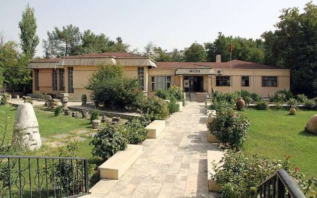
आदियामान संग्रहालयआदियामान · संग्रहालय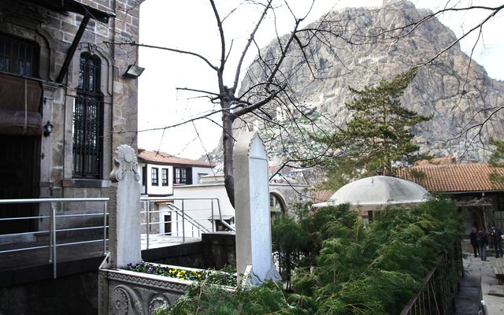
अफ़्योनकाराहिसार मेवलेवी ख़ानक़ाहअफ़्योनकाराहिसार · धार्मिक इमारत अफ़्योनकाराहिसार किलाअफ़्योनकाराहिसार · क़िला और ऐतिहासिक इमारत
अफ़्योनकाराहिसार किलाअफ़्योनकाराहिसार · क़िला और ऐतिहासिक इमारत अफ़्योनकाराहिसार संग्रहालयअफ़्योनकाराहिसार · संग्रहालय
अफ़्योनकाराहिसार संग्रहालयअफ़्योनकाराहिसार · संग्रहालय स्मिर्ना अगोरा पुरातात्विक स्थलइज़मिर · पुरातात्विक स्थल
स्मिर्ना अगोरा पुरातात्विक स्थलइज़मिर · पुरातात्विक स्थल अहलात संग्रहालयबितलिस · संग्रहालय
अहलात संग्रहालयबितलिस · संग्रहालय अहलात सेल्जुक क़ब्रिस्तानबितलिस · पुरातात्विक स्थल
अहलात सेल्जुक क़ब्रिस्तानबितलिस · पुरातात्विक स्थल अहमत पिरिश्तिना नगर अभिलेखागार और संग्रहालयइज़मिर · संग्रहालय
अहमत पिरिश्तिना नगर अभिलेखागार और संग्रहालयइज़मिर · संग्रहालय अहरिदा सिनेगॉगइस्तांबुल · धार्मिक इमारत
अहरिदा सिनेगॉगइस्तांबुल · धार्मिक इमारत काष्ठ कला संग्रहालयएस्कीशेहिर · संग्रहालय
काष्ठ कला संग्रहालयएस्कीशेहिर · संग्रहालय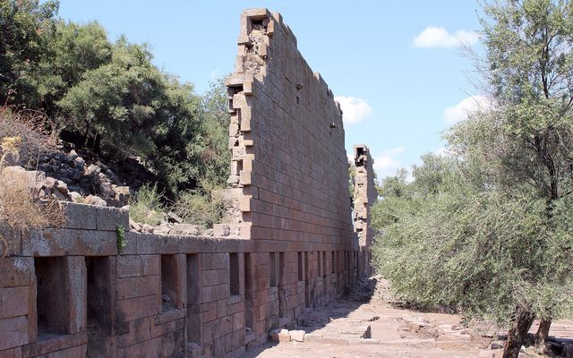
आइगाई पुरातात्विक स्थलमानीसा · पुरातात्विक स्थल आइज़ानोई पुरातात्विक स्थलक्युताह्या · पुरातात्विक स्थलअकालिस्सोसअंताल्या · पुरातात्विक स्थल
आइज़ानोई पुरातात्विक स्थलक्युताह्या · पुरातात्विक स्थलअकालिस्सोसअंताल्या · पुरातात्विक स्थल अक्दामार स्मारक संग्रहालयवान · संग्रहालय
अक्दामार स्मारक संग्रहालयवान · संग्रहालय आक्कालेमेर्सिन · पुरातात्विक स्थल
आक्कालेमेर्सिन · पुरातात्विक स्थल अक्साराय मठ घाटीअक्साराय · पुरातात्विक स्थल
अक्साराय मठ घाटीअक्साराय · पुरातात्विक स्थल अक्साराय संग्रहालयअक्साराय · संग्रहालय
अक्साराय संग्रहालयअक्साराय · संग्रहालय आक्चाकोजा (जेनोआ) क़िलाद्यूज़जे · क़िला और ऐतिहासिक इमारत
आक्चाकोजा (जेनोआ) क़िलाद्यूज़जे · क़िला और ऐतिहासिक इमारत अक्शेहिर नसरुद्दीन होजा पुरातत्व और नृवंशविज्ञान संग्रहालयकोन्या · संग्रहालयअक्शेमसेद्दीन का मक़बराबोलू · धार्मिक इमारत
अक्शेहिर नसरुद्दीन होजा पुरातत्व और नृवंशविज्ञान संग्रहालयकोन्या · संग्रहालयअक्शेमसेद्दीन का मक़बराबोलू · धार्मिक इमारत अलाबांडा पुरातात्विक स्थलआयदिन · पुरातात्विक स्थल
अलाबांडा पुरातात्विक स्थलआयदिन · पुरातात्विक स्थल अलाजाह्यूयुक संग्रहालय और पुरातात्विक स्थलचोरुम · पुरातात्विक स्थल
अलाजाह्यूयुक संग्रहालय और पुरातात्विक स्थलचोरुम · पुरातात्विक स्थल अलाउद्दीन मस्जिदकोन्या · धार्मिक इमारतअलाउद्दीन यावाश्चा गृह संग्रहालयकिलिस · संग्रहालय
अलाउद्दीन मस्जिदकोन्या · धार्मिक इमारतअलाउद्दीन यावाश्चा गृह संग्रहालयकिलिस · संग्रहालय अलागादी कछुआ तटगिर्ने (किरेनिया) · प्राकृतिक स्थल
अलागादी कछुआ तटगिर्ने (किरेनिया) · प्राकृतिक स्थल अलागोज़ मुख्यालय संग्रहालयअंकारा · संग्रहालय
अलागोज़ मुख्यालय संग्रहालयअंकारा · संग्रहालय अलाहान मठमेर्सिन · धार्मिक इमारतअलान्या अतातुर्क गृह संग्रहालयअंताल्या · संग्रहालय
अलाहान मठमेर्सिन · धार्मिक इमारतअलान्या अतातुर्क गृह संग्रहालयअंताल्या · संग्रहालय अलान्या क़िलाअंताल्या · क़िला और ऐतिहासिक इमारत
अलान्या क़िलाअंताल्या · क़िला और ऐतिहासिक इमारत अलान्या संग्रहालयअंताल्या · संग्रहालय
अलान्या संग्रहालयअंताल्या · संग्रहालय अलाराहानअंताल्या · क़िला और ऐतिहासिक इमारत
अलाराहानअंताल्या · क़िला और ऐतिहासिक इमारत अलाय हानअक्साराय · क़िला और ऐतिहासिक इमारतअलाचाम जनसंख्या-विनिमय संग्रहालयसामसुन · संग्रहालय
अलाय हानअक्साराय · क़िला और ऐतिहासिक इमारतअलाचाम जनसंख्या-विनिमय संग्रहालयसामसुन · संग्रहालय आलाशेहिर (फ़िलाडेल्फ़िया) पुरातात्विक स्थलमानीसा · पुरातात्विक स्थल
आलाशेहिर (फ़िलाडेल्फ़िया) पुरातात्विक स्थलमानीसा · पुरातात्विक स्थल अलेक्ज़ान्ड्रिया त्रोआस पुरातात्विक स्थलचानाक्काले · पुरातात्विक स्थलअली देमिरसोय प्राकृतिक इतिहास संग्रहालयएर्ज़िंजान · संग्रहालय
अलेक्ज़ान्ड्रिया त्रोआस पुरातात्विक स्थलचानाक्काले · पुरातात्विक स्थलअली देमिरसोय प्राकृतिक इतिहास संग्रहालयएर्ज़िंजान · संग्रहालय अलिंडा पुरातात्विक स्थलआयदिन · पुरातात्विक स्थल
अलिंडा पुरातात्विक स्थलआयदिन · पुरातात्विक स्थल अलिशार टीलायोज़गात · पुरातात्विक स्थल
अलिशार टीलायोज़गात · पुरातात्विक स्थल अल्तिनकोय खुला संग्रहालयअंकारा · संग्रहालय
अल्तिनकोय खुला संग्रहालयअंकारा · संग्रहालय अल्तिनतेपे उरार्तु क़िलाएर्ज़िंजान · पुरातात्विक स्थल
अल्तिनतेपे उरार्तु क़िलाएर्ज़िंजान · पुरातात्विक स्थल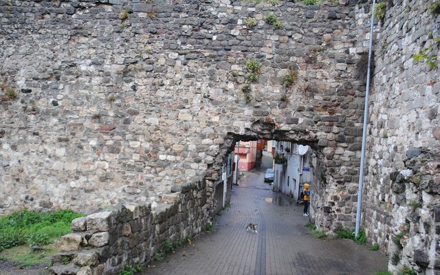
अमास्रा किलाबार्तिन · क़िला और ऐतिहासिक इमारत अमास्रा संग्रहालयबार्तिन · संग्रहालय
अमास्रा संग्रहालयबार्तिन · संग्रहालय अमास्या संग्रहालयअमास्या · संग्रहालय
अमास्या संग्रहालयअमास्या · संग्रहालय अमिंतास चट्टानी क़ब्रमुग़ला · पुरातात्विक स्थल
अमिंतास चट्टानी क़ब्रमुग़ला · पुरातात्विक स्थल आमिसोस पहाड़ीसामसुन · पुरातात्विक स्थल
आमिसोस पहाड़ीसामसुन · पुरातात्विक स्थल अमोरियम प्राचीन नगरअफ़्योनकाराहिसार · पुरातात्विक स्थल
अमोरियम प्राचीन नगरअफ़्योनकाराहिसार · पुरातात्विक स्थल आमोस प्राचीन नगरमुग़ला · पुरातात्विक स्थलअमीज़ोनआयदिन · पुरातात्विक स्थल
आमोस प्राचीन नगरमुग़ला · पुरातात्विक स्थलअमीज़ोनआयदिन · पुरातात्विक स्थल अनादोलु हिसारीइस्तांबुल · क़िला और ऐतिहासिक इमारत
अनादोलु हिसारीइस्तांबुल · क़िला और ऐतिहासिक इमारत अनातोलियाई सभ्यता संग्रहालयअंकारा · संग्रहालय
अनातोलियाई सभ्यता संग्रहालयअंकारा · संग्रहालय अनातोलिया जीवंत गाँव खुला संग्रहालयअंकारा · संग्रहालयअनामुर संग्रहालयमेर्सिन · संग्रहालय
अनातोलिया जीवंत गाँव खुला संग्रहालयअंकारा · संग्रहालयअनामुर संग्रहालयमेर्सिन · संग्रहालय अनावार्ज़ा पुरातात्विक स्थलअदाना · पुरातात्विक स्थल
अनावार्ज़ा पुरातात्विक स्थलअदाना · पुरातात्विक स्थल अनेमुरियम पुरातात्विक स्थलमेर्सिन · पुरातात्विक स्थल
अनेमुरियम पुरातात्विक स्थलमेर्सिन · पुरातात्विक स्थल अंकारा किलाअंकारा · क़िला और ऐतिहासिक इमारत
अंकारा किलाअंकारा · क़िला और ऐतिहासिक इमारत अंकारा खिलौना संग्रहालयअंकारा · संग्रहालय
अंकारा खिलौना संग्रहालयअंकारा · संग्रहालय अंकारा रोमन थिएटरअंकारा · पुरातात्विक स्थल
अंकारा रोमन थिएटरअंकारा · पुरातात्विक स्थल अंताल्या अतातुर्क गृह संग्रहालयअंताल्या · संग्रहालय
अंताल्या अतातुर्क गृह संग्रहालयअंताल्या · संग्रहालय अंताल्या नृवंशविज्ञान संग्रहालयअंताल्या · संग्रहालय
अंताल्या नृवंशविज्ञान संग्रहालयअंताल्या · संग्रहालय अंताल्या संग्रहालयअंताल्या · संग्रहालयअंताल्या नेक्रोपोलिस संग्रहालयअंताल्या · संग्रहालय
अंताल्या संग्रहालयअंताल्या · संग्रहालयअंताल्या नेक्रोपोलिस संग्रहालयअंताल्या · संग्रहालय अंताल्या खिलौना संग्रहालयअंताल्या · संग्रहालय
अंताल्या खिलौना संग्रहालयअंताल्या · संग्रहालय स्येद्रा प्राचीन नगरअंताल्या · पुरातात्विक स्थल
स्येद्रा प्राचीन नगरअंताल्या · पुरातात्विक स्थल अंतान्द्रोस प्राचीन नगरबालिकेसिर · पुरातात्विक स्थल
अंतान्द्रोस प्राचीन नगरबालिकेसिर · पुरातात्विक स्थल पिसिडियाई एंटिओक पुरातात्विक स्थलइस्पार्ता · पुरातात्विक स्थल
पिसिडियाई एंटिओक पुरातात्विक स्थलइस्पार्ता · पुरातात्विक स्थल क्रागुस का अंतिओखियाअंताल्या · पुरातात्विक स्थल
क्रागुस का अंतिओखियाअंताल्या · पुरातात्विक स्थल एंटीफ़ेलोसअंताल्या · पुरातात्विक स्थल
एंटीफ़ेलोसअंताल्या · पुरातात्विक स्थल एंटीफ़ोनितिस चर्चगिर्ने (किरेनिया) · धार्मिक इमारत
एंटीफ़ोनितिस चर्चगिर्ने (किरेनिया) · धार्मिक इमारत अनितकबीरअंकारा · संग्रहालय
अनितकबीरअंकारा · संग्रहालय अपेर्लाई प्राचीन नगरअंताल्या · पुरातात्विक स्थल
अपेर्लाई प्राचीन नगरअंताल्या · पुरातात्विक स्थल अपोलो स्मिंथियॉन पुरातात्विक स्थलचानाक्काले · पुरातात्विक स्थल
अपोलो स्मिंथियॉन पुरातात्विक स्थलचानाक्काले · पुरातात्विक स्थल अपोलोनिया (लीकिया) प्राचीन नगरअंताल्या · पुरातात्विक स्थल
अपोलोनिया (लीकिया) प्राचीन नगरअंताल्या · पुरातात्विक स्थल प्रेरित अंद्रियास मठइस्केले (त्रिकोमो) · धार्मिक इमारत
प्रेरित अंद्रियास मठइस्केले (त्रिकोमो) · धार्मिक इमारत आरा ग्युलर संग्रहालयइस्तांबुल · संग्रहालय
आरा ग्युलर संग्रहालयइस्तांबुल · संग्रहालय आरियास्सोस प्राचीन नगरअंताल्या · पुरातात्विक स्थल
आरियास्सोस प्राचीन नगरअंताल्या · पुरातात्विक स्थल आर्कास कला केंद्रइज़मिर · संग्रहालयआर्नेआईअंताल्या · पुरातात्विक स्थल
आर्कास कला केंद्रइज़मिर · संग्रहालयआर्नेआईअंताल्या · पुरातात्विक स्थल आरसादामुग़ला · पुरातात्विक स्थल
आरसादामुग़ला · पुरातात्विक स्थल आर्सामेइया पुरातात्विक स्थलआदियामान · पुरातात्विक स्थल
आर्सामेइया पुरातात्विक स्थलआदियामान · पुरातात्विक स्थल आर्तेरइस्तांबुल · संग्रहालय
आर्तेरइस्तांबुल · संग्रहालय आरीकांडा पुरातात्विक स्थलअंताल्या · पुरातात्विक स्थल
आरीकांडा पुरातात्विक स्थलअंताल्या · पुरातात्विक स्थल असहाब-ए-कहफ़ परिसरकहरामानमाराश · धार्मिक इमारत
असहाब-ए-कहफ़ परिसरकहरामानमाराश · धार्मिक इमारत सैन्य संग्रहालयइस्तांबुल · संग्रहालय
सैन्य संग्रहालयइस्तांबुल · संग्रहालय आस्पेंडोसअंताल्या · पुरातात्विक स्थल
आस्पेंडोसअंताल्या · पुरातात्विक स्थल आसोस पुरातात्विक स्थलचानाक्काले · पुरातात्विक स्थलदियारबाकिर अतातुर्क गृह संग्रहालयदियारबाकिर · संग्रहालय
आसोस पुरातात्विक स्थलचानाक्काले · पुरातात्विक स्थलदियारबाकिर अतातुर्क गृह संग्रहालयदियारबाकिर · संग्रहालय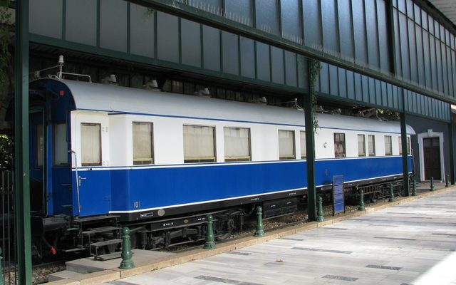
अतातुर्क आवास और रेलवे संग्रहालयअंकारा · संग्रहालय अतातुर्क संग्रहालय (शिशली)इस्तांबुल · संग्रहालयउशाक अतातुर्क और नृवंशविज्ञान संग्रहालयउशाक · संग्रहालय
अतातुर्क संग्रहालय (शिशली)इस्तांबुल · संग्रहालयउशाक अतातुर्क और नृवंशविज्ञान संग्रहालयउशाक · संग्रहालय अतातुर्क, रेदीफ़ और नृवंशविज्ञान संग्रहालयकोजाएली · संग्रहालय
अतातुर्क, रेदीफ़ और नृवंशविज्ञान संग्रहालयकोजाएली · संग्रहालय एटलस 1948 इस्तांबुल सिनेमा संग्रहालयइस्तांबुल · संग्रहालय
एटलस 1948 इस्तांबुल सिनेमा संग्रहालयइस्तांबुल · संग्रहालय ऑगस्टस मंदिरअंकारा · पुरातात्विक स्थल
ऑगस्टस मंदिरअंकारा · पुरातात्विक स्थल शिकारगाह महल संग्रहालयकोजाएली · संग्रहालय
शिकारगाह महल संग्रहालयकोजाएली · संग्रहालय हागिया आइरीनइस्तांबुल · धार्मिक इमारत
हागिया आइरीनइस्तांबुल · धार्मिक इमारत अयानिस किलावान · पुरातात्विक स्थल
अयानिस किलावान · पुरातात्विक स्थल अयास किला (युमुर्तालिक)अदाना · क़िला और ऐतिहासिक इमारत
अयास किला (युमुर्तालिक)अदाना · क़िला और ऐतिहासिक इमारत आया सोफ़िया इतिहास और अनुभव संग्रहालयइस्तांबुल · संग्रहालय
आया सोफ़िया इतिहास और अनुभव संग्रहालयइस्तांबुल · संग्रहालय हागिया सोफ़िया महान मस्जिदइस्तांबुल · धार्मिक इमारत
हागिया सोफ़िया महान मस्जिदइस्तांबुल · धार्मिक इमारत अयासुलुक संत जॉन बेसिलिकाइज़मिर · पुरातात्विक स्थल
अयासुलुक संत जॉन बेसिलिकाइज़मिर · पुरातात्विक स्थल अयासुलुक क़िलाइज़मिर · क़िला और ऐतिहासिक इमारत
अयासुलुक क़िलाइज़मिर · क़िला और ऐतिहासिक इमारत आयदिन पुरातत्व संग्रहालयआयदिन · संग्रहालयअयिया त्रियास बेसिलिकाइस्केले (त्रिकोमो) · धार्मिक इमारत
आयदिन पुरातत्व संग्रहालयआयदिन · संग्रहालयअयिया त्रियास बेसिलिकाइस्केले (त्रिकोमो) · धार्मिक इमारत आयनालिकावाक मंडपइस्तांबुल · क़िला और ऐतिहासिक इमारत
आयनालिकावाक मंडपइस्तांबुल · क़िला और ऐतिहासिक इमारत संत निकोलस स्मारक संग्रहालयअंताल्या · संग्रहालयसंत मर्क्यूरियस भूमिगत नगरअक्साराय · भूमिगत नगरसंत पॉल मार्गअंताल्या · ट्रेकिंग मार्ग
संत निकोलस स्मारक संग्रहालयअंताल्या · संग्रहालयसंत मर्क्यूरियस भूमिगत नगरअक्साराय · भूमिगत नगरसंत पॉल मार्गअंताल्या · ट्रेकिंग मार्ग अचाना होयुक (अलालख)हताय · पुरातात्विक स्थल
अचाना होयुक (अलालख)हताय · पुरातात्विक स्थल अग़्ज़िकारा सरायअक्साराय · क़िला और ऐतिहासिक इमारत
अग़्ज़िकारा सरायअक्साराय · क़िला और ऐतिहासिक इमारत आशिक वेयसेल संग्रहालयसिवास · संग्रहालय
आशिक वेयसेल संग्रहालयसिवास · संग्रहालय आशिकली ह्यूयुकअक्साराय · पुरातात्विक स्थल
आशिकली ह्यूयुकअक्साराय · पुरातात्विक स्थल बाफ़ा झील प्रकृति उद्यानमुग़ला · झील
बाफ़ा झील प्रकृति उद्यानमुग़ला · झील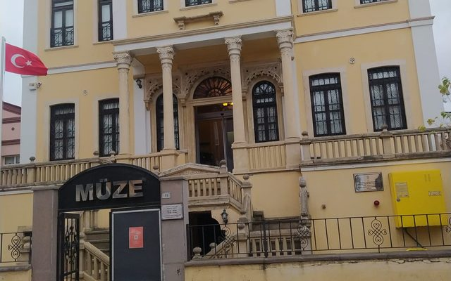
बाफ़्रा संग्रहालयसामसुन · संग्रहालय बकरास किलाहताय · क़िला और ऐतिहासिक इमारतबाल्बुरा प्राचीन नगरबुर्दुर · पुरातात्विक स्थल
बकरास किलाहताय · क़िला और ऐतिहासिक इमारतबाल्बुरा प्राचीन नगरबुर्दुर · पुरातात्विक स्थल बालिकेसिर कुवा-यि मिल्लिये संग्रहालयबालिकेसिर · संग्रहालय
बालिकेसिर कुवा-यि मिल्लिये संग्रहालयबालिकेसिर · संग्रहालय बालिक्लीगोल (पवित्र मछलियों का तालाब)शानलीउर्फ़ा · धार्मिक इमारत
बालिक्लीगोल (पवित्र मछलियों का तालाब)शानलीउर्फ़ा · धार्मिक इमारत बांदिरमा संग्रहालयबालिकेसिर · संग्रहालय
बांदिरमा संग्रहालयबालिकेसिर · संग्रहालय बांदिरमा जहाज़ संग्रहालयसामसुन · संग्रहालय
बांदिरमा जहाज़ संग्रहालयसामसुन · संग्रहालय बर्बरता संग्रहालयलेफ़कोशा (निकोसिया) · संग्रहालय
बर्बरता संग्रहालयलेफ़कोशा (निकोसिया) · संग्रहालय बार्गिलियामुग़ला · पुरातात्विक स्थल
बार्गिलियामुग़ला · पुरातात्विक स्थल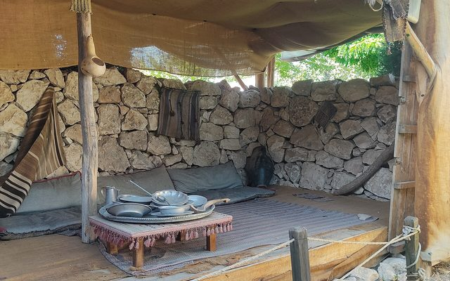
बातमान संग्रहालयबातमान · संग्रहालय पश्चिमी मोर्चा मुख्यालय संग्रहालयकोन्या · संग्रहालय
पश्चिमी मोर्चा मुख्यालय संग्रहालयकोन्या · संग्रहालय बायबुर्त बाक्सी संग्रहालयबायबुर्त · संग्रहालयबेलदिबी गुफाअंताल्या · पुरातात्विक स्थल
बायबुर्त बाक्सी संग्रहालयबायबुर्त · संग्रहालयबेलदिबी गुफाअंताल्या · पुरातात्विक स्थल बेलापाइस मठगिर्ने (किरेनिया) · धार्मिक इमारत
बेलापाइस मठगिर्ने (किरेनिया) · धार्मिक इमारत बेर्गामा संग्रहालयइज़मिर · संग्रहालय
बेर्गामा संग्रहालयइज़मिर · संग्रहालय बेयाज़ित हमाम संस्कृति संग्रहालयइस्तांबुल · संग्रहालय
बेयाज़ित हमाम संस्कृति संग्रहालयइस्तांबुल · संग्रहालय बेयजेसुल्तान टीलादेनिज़्ली · पुरातात्विक स्थल
बेयजेसुल्तान टीलादेनिज़्ली · पुरातात्विक स्थल बेयकोज़ काँच और बिल्लौर संग्रहालयइस्तांबुल · संग्रहालय
बेयकोज़ काँच और बिल्लौर संग्रहालयइस्तांबुल · संग्रहालय बेयलरबेयी महलइस्तांबुल · क़िला और ऐतिहासिक इमारत
बेयलरबेयी महलइस्तांबुल · क़िला और ऐतिहासिक इमारत बेयपाज़ारी जीवंत संग्रहालयअंकारा · संग्रहालय
बेयपाज़ारी जीवंत संग्रहालयअंकारा · संग्रहालय बेयशेहिर झील राष्ट्रीय उद्यानकोन्या · झीलबेशकोनाक्लार नृवंशविज्ञान संग्रहालय और पारंपरिक मालात्या घरमालात्या · संग्रहालय
बेयशेहिर झील राष्ट्रीय उद्यानकोन्या · झीलबेशकोनाक्लार नृवंशविज्ञान संग्रहालय और पारंपरिक मालात्या घरमालात्या · संग्रहालय बेशपारमाक पर्वत (पेंटाडैक्टिलोस)गिर्ने (किरेनिया) · प्राकृतिक स्थलबिलेजिक संग्रहालयबिलेजिक · संग्रहालय
बेशपारमाक पर्वत (पेंटाडैक्टिलोस)गिर्ने (किरेनिया) · प्राकृतिक स्थलबिलेजिक संग्रहालयबिलेजिक · संग्रहालय बिन तेपे लिडियाई टीलेमानीसा · पुरातात्विक स्थल
बिन तेपे लिडियाई टीलेमानीसा · पुरातात्विक स्थल बिनबिर किलिसे (हज़ार एक गिरजे)करामान · पुरातात्विक स्थल
बिनबिर किलिसे (हज़ार एक गिरजे)करामान · पुरातात्विक स्थल बिनबिरदिरेक हौज़ (फ़िलोक्सेनोस)इस्तांबुल · क़िला और ऐतिहासिक इमारत
बिनबिरदिरेक हौज़ (फ़िलोक्सेनोस)इस्तांबुल · क़िला और ऐतिहासिक इमारत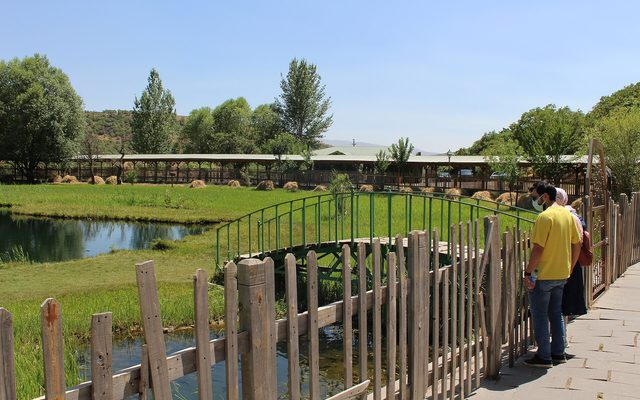
बिंगोल के तैरते द्वीपबिंगोल · झील बिर्गी चाकिराआ हवेलीइज़मिर · संग्रहालयबितलिस नृवंशविज्ञान संग्रहालयबितलिस · संग्रहालय
बिर्गी चाकिराआ हवेलीइज़मिर · संग्रहालयबितलिस नृवंशविज्ञान संग्रहालयबितलिस · संग्रहालय बितलिस किलाबितलिस · क़िला और ऐतिहासिक इमारत
बितलिस किलाबितलिस · क़िला और ऐतिहासिक इमारत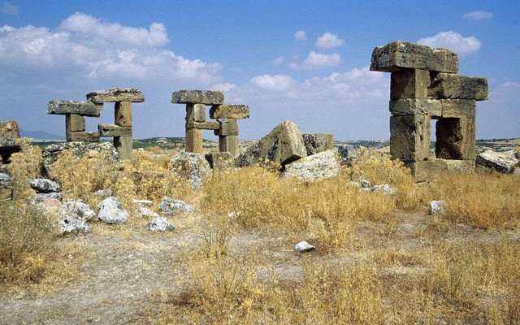
ब्लाउंडोस पुरातात्विक स्थलउशाक · पुरातात्विक स्थल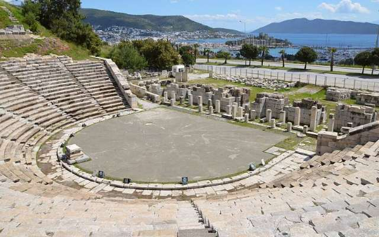
बोद्रुम प्राचीन रंगमंचमुग़ला · पुरातात्विक स्थल बोद्रुम सेर्चे लिमानी काँच-पोत प्रदर्शनी हॉलमुग़ला · संग्रहालय
बोद्रुम सेर्चे लिमानी काँच-पोत प्रदर्शनी हॉलमुग़ला · संग्रहालय बोद्रुम जलगत पुरातत्व संग्रहालयमुग़ला · संग्रहालय
बोद्रुम जलगत पुरातत्व संग्रहालयमुग़ला · संग्रहालय बोलामान क़िलाओर्दु · क़िला और ऐतिहासिक इमारत
बोलामान क़िलाओर्दु · क़िला और ऐतिहासिक इमारत बोलू संग्रहालयबोलू · संग्रहालय
बोलू संग्रहालयबोलू · संग्रहालय बोनजुक्लु होयुककोन्या · पुरातात्विक स्थल
बोनजुक्लु होयुककोन्या · पुरातात्विक स्थल बोस्तानली खुला पुरातत्व संग्रहालयइज़मिर · संग्रहालय
बोस्तानली खुला पुरातत्व संग्रहालयइज़मिर · संग्रहालय बोज़दोगान जलसेतु (वेलेंस जलसेतु)इस्तांबुल · क़िला और ऐतिहासिक इमारतबोगातेपे पनीर संग्रहालयकार्स · संग्रहालय
बोज़दोगान जलसेतु (वेलेंस जलसेतु)इस्तांबुल · क़िला और ऐतिहासिक इमारतबोगातेपे पनीर संग्रहालयकार्स · संग्रहालय बोआज़कोय संग्रहालयचोरुम · संग्रहालय
बोआज़कोय संग्रहालयचोरुम · संग्रहालय बुफ़्फ़ावेंतो किलागिर्ने (किरेनिया) · क़िला और ऐतिहासिक इमारत
बुफ़्फ़ावेंतो किलागिर्ने (किरेनिया) · क़िला और ऐतिहासिक इमारत बुल्गारियाई संत स्टीफ़न गिरजाघर (लोहे का गिरजाघर)इस्तांबुल · धार्मिक इमारत
बुल्गारियाई संत स्टीफ़न गिरजाघर (लोहे का गिरजाघर)इस्तांबुल · धार्मिक इमारत बुर्दुर संग्रहालयबुर्दुर · संग्रहालय
बुर्दुर संग्रहालयबुर्दुर · संग्रहालय बुर्सा पुरातत्व संग्रहालयबुर्सा · संग्रहालय
बुर्सा पुरातत्व संग्रहालयबुर्सा · संग्रहालय बुर्सा अतातुर्क गृह संग्रहालयबुर्सा · संग्रहालय
बुर्सा अतातुर्क गृह संग्रहालयबुर्सा · संग्रहालय बुर्सा नगर संग्रहालयबुर्सा · संग्रहालय
बुर्सा नगर संग्रहालयबुर्सा · संग्रहालय बुर्सा तुर्क-इस्लामी कला संग्रहालयबुर्सा · संग्रहालय
बुर्सा तुर्क-इस्लामी कला संग्रहालयबुर्सा · संग्रहालय बुर्सा उलू मस्जिदबुर्सा · धार्मिक इमारत
बुर्सा उलू मस्जिदबुर्सा · धार्मिक इमारत बुर्सा हरी मस्जिद और हरा मकबराबुर्सा · धार्मिक इमारत
बुर्सा हरी मस्जिद और हरा मकबराबुर्सा · धार्मिक इमारत बुर्सा इज़निक झील बेसिलिकाबुर्सा · धार्मिक इमारत
बुर्सा इज़निक झील बेसिलिकाबुर्सा · धार्मिक इमारत बुयुक आगा मदरसाअमास्या · धार्मिक इमारत
बुयुक आगा मदरसाअमास्या · धार्मिक इमारत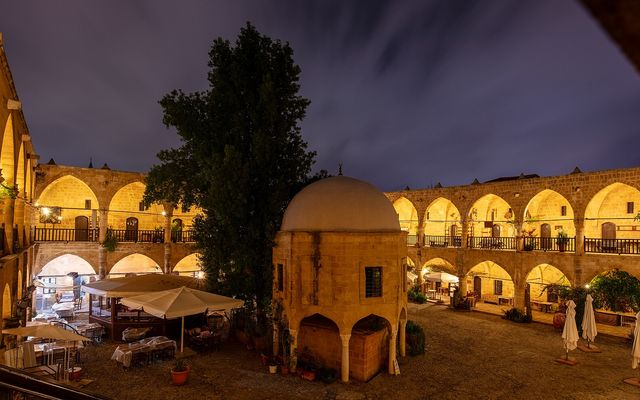
ब्युयुक हानलेफ़कोशा (निकोसिया) · क़िला और ऐतिहासिक इमारत महान महल मोज़ेक संग्रहालयइस्तांबुल · संग्रहालय
महान महल मोज़ेक संग्रहालयइस्तांबुल · संग्रहालय जाजाबे मदरसाकिरशेहिर · धार्मिक इमारत
जाजाबे मदरसाकिरशेहिर · धार्मिक इमारत जाहित सित्की तारांजी गृह नृवंशविज्ञान संग्रहालयदियारबाकिर · संग्रहालय
जाहित सित्की तारांजी गृह नृवंशविज्ञान संग्रहालयदियारबाकिर · संग्रहालय जेहेन्नेमाग्ज़ी गुफाएँज़ोंगुलदाक · प्राकृतिक स्थल
जेहेन्नेमाग्ज़ी गुफाएँज़ोंगुलदाक · प्राकृतिक स्थल जेंदेरे पुलआदियामान · क़िला और ऐतिहासिक इमारत
जेंदेरे पुलआदियामान · क़िला और ऐतिहासिक इमारत जेंदेरे कला संग्रहालयइस्तांबुल · संग्रहालय
जेंदेरे कला संग्रहालयइस्तांबुल · संग्रहालय जेरमॉडर्नअंकारा · संग्रहालय
जेरमॉडर्नअंकारा · संग्रहालय जिंजी सरायकाराब्युक · क़िला और ऐतिहासिक इमारत
जिंजी सरायकाराब्युक · क़िला और ऐतिहासिक इमारत जिज़्रे का लाल मदरसाशिर्नाक · क़िला और ऐतिहासिक इमारत
जिज़्रे का लाल मदरसाशिर्नाक · क़िला और ऐतिहासिक इमारत जुमालिकिज़िक गाँवबुर्सा · क़िला और ऐतिहासिक इमारत
जुमालिकिज़िक गाँवबुर्सा · क़िला और ऐतिहासिक इमारत गणराज्य संग्रहालयअंकारा · संग्रहालय
गणराज्य संग्रहालयअंकारा · संग्रहालय दालामान नदीमुग़ला · राफ़्टिंग
दालामान नदीमुग़ला · राफ़्टिंग दारा पुरातात्विक स्थलमार्दिन · पुरातात्विक स्थल
दारा पुरातात्विक स्थलमार्दिन · पुरातात्विक स्थल दास्किलेयोन प्राचीन नगरबालिकेसिर · पुरातात्विक स्थलदावराज़ स्की रिज़ॉर्टइस्पार्ता · स्की रिज़ॉर्टदेमिरकोय ढलाईघरकिर्कलारेली · पुरातात्विक स्थल
दास्किलेयोन प्राचीन नगरबालिकेसिर · पुरातात्विक स्थलदावराज़ स्की रिज़ॉर्टइस्पार्ता · स्की रिज़ॉर्टदेमिरकोय ढलाईघरकिर्कलारेली · पुरातात्विक स्थल देनिज़्ली अतातुर्क और नृवंशविज्ञान संग्रहालयदेनिज़्ली · संग्रहालय
देनिज़्ली अतातुर्क और नृवंशविज्ञान संग्रहालयदेनिज़्ली · संग्रहालय देनिज़्ली नगर संग्रहालयदेनिज़्ली · संग्रहालय
देनिज़्ली नगर संग्रहालयदेनिज़्ली · संग्रहालय त्रिपोलिस पुरातात्विक स्थलदेनिज़्ली · पुरातात्विक स्थलडर्बेकरामान · पुरातात्विक स्थल
त्रिपोलिस पुरातात्विक स्थलदेनिज़्ली · पुरातात्विक स्थलडर्बेकरामान · पुरातात्विक स्थल दरवेश पाशा हवेलीलेफ़कोशा (निकोसिया) · संग्रहालय
दरवेश पाशा हवेलीलेफ़कोशा (निकोसिया) · संग्रहालय राजकीय क़ब्रिस्तानअंकारा · क़िला और ऐतिहासिक इमारत
राजकीय क़ब्रिस्तानअंकारा · क़िला और ऐतिहासिक इमारत देवरिम कार संग्रहालयएस्कीशेहिर · संग्रहालय
देवरिम कार संग्रहालयएस्कीशेहिर · संग्रहालय देयरुलज़फ़रान मठमार्दिन · धार्मिक इमारत
देयरुलज़फ़रान मठमार्दिन · धार्मिक इमारत दिजला सुरंग (बिर्कलेन गुफाएँ)दियारबाकिर · पुरातात्विक स्थल
दिजला सुरंग (बिर्कलेन गुफाएँ)दियारबाकिर · पुरातात्विक स्थल दीदिम अपोलो मंदिरआयदिन · पुरातात्विक स्थल
दीदिम अपोलो मंदिरआयदिन · पुरातात्विक स्थल दिव्रिगी उलू मस्जिद और अस्पतालसिवास · धार्मिक इमारत
दिव्रिगी उलू मस्जिद और अस्पतालसिवास · धार्मिक इमारत दियारबाकिर पुरातत्व संग्रहालयदियारबाकिर · संग्रहालय
दियारबाकिर पुरातत्व संग्रहालयदियारबाकिर · संग्रहालय दियारबकिर नगर-दीवारेंदियारबाकिर · क़िला और ऐतिहासिक इमारत
दियारबकिर नगर-दीवारेंदियारबाकिर · क़िला और ऐतिहासिक इमारत दियारबकिर उलू मस्जिददियारबाकिर · धार्मिक इमारत
दियारबकिर उलू मस्जिददियारबाकिर · धार्मिक इमारत दोल्माबाहचे महलइस्तांबुल · क़िला और ऐतिहासिक इमारतप्राकृतिक इतिहास संग्रहालयबुर्दुर · संग्रहालय
दोल्माबाहचे महलइस्तांबुल · क़िला और ऐतिहासिक इमारतप्राकृतिक इतिहास संग्रहालयबुर्दुर · संग्रहालय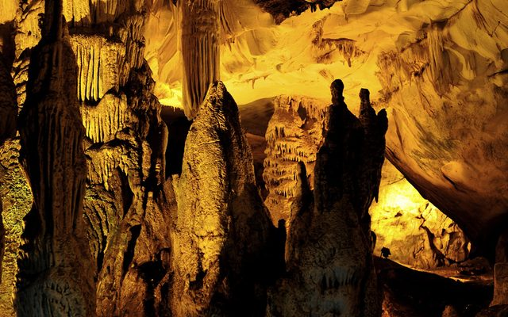
दुपनिसा गुफाकिर्कलारेली · प्राकृतिक स्थल ड्यूडेन जलप्रपातअंताल्या · जलप्रपातदुलुक (दोलिखे)गाज़ियांतेप · पुरातात्विक स्थल
ड्यूडेन जलप्रपातअंताल्या · जलप्रपातदुलुक (दोलिखे)गाज़ियांतेप · पुरातात्विक स्थल एदिर्ने महान सिनेगॉगएदिर्ने · धार्मिक इमारतएदिर्ने हिदिरलिक तोपख़ाना बाल्कन इतिहास संग्रहालयएदिर्ने · संग्रहालय
एदिर्ने महान सिनेगॉगएदिर्ने · धार्मिक इमारतएदिर्ने हिदिरलिक तोपख़ाना बाल्कन इतिहास संग्रहालयएदिर्ने · संग्रहालय एदिर्ने मैसेडोनियाई बुर्जएदिर्ने · क़िला और ऐतिहासिक इमारत
एदिर्ने मैसेडोनियाई बुर्जएदिर्ने · क़िला और ऐतिहासिक इमारत एदिर्ने संग्रहालयएदिर्ने · संग्रहालय
एदिर्ने संग्रहालयएदिर्ने · संग्रहालय एदिर्ने महल (सराय-ए-जदीद) के अवशेषएदिर्ने · पुरातात्विक स्थल
एदिर्ने महल (सराय-ए-जदीद) के अवशेषएदिर्ने · पुरातात्विक स्थल एदिर्ने सेलिमिये मस्जिदएदिर्ने · धार्मिक इमारतइफ़िसुस अनुभव संग्रहालयइज़मिर · संग्रहालय
एदिर्ने सेलिमिये मस्जिदएदिर्ने · धार्मिक इमारतइफ़िसुस अनुभव संग्रहालयइज़मिर · संग्रहालय इफ़िसुस संग्रहालयइज़मिर · संग्रहालय
इफ़िसुस संग्रहालयइज़मिर · संग्रहालय इफ़िसुस ढलान-घरइज़मिर · पुरातात्विक स्थल
इफ़िसुस ढलान-घरइज़मिर · पुरातात्विक स्थल एफ़्लातुनपिनार हित्ती जल स्मारककोन्या · पुरातात्विक स्थलएगे विश्वविद्यालय प्राकृतिक इतिहास संग्रहालयइज़मिर · संग्रहालय
एफ़्लातुनपिनार हित्ती जल स्मारककोन्या · पुरातात्विक स्थलएगे विश्वविद्यालय प्राकृतिक इतिहास संग्रहालयइज़मिर · संग्रहालय एलाइउस्सा सेबास्तेमेर्सिन · पुरातात्विक स्थलएलाज़िग संग्रहालयएलाज़िग · संग्रहालयएल्बिस्तान नगर संग्रहालयकहरामानमाराश · संग्रहालय
एलाइउस्सा सेबास्तेमेर्सिन · पुरातात्विक स्थलएलाज़िग संग्रहालयएलाज़िग · संग्रहालयएल्बिस्तान नगर संग्रहालयकहरामानमाराश · संग्रहालय एल्गिज़ समकालीन कला संग्रहालयइस्तांबुल · संग्रहालयएलमाली संग्रहालयअंताल्या · संग्रहालयएमिने गोगुश पाक संग्रहालयगाज़ियांतेप · संग्रहालय
एल्गिज़ समकालीन कला संग्रहालयइस्तांबुल · संग्रहालयएलमाली संग्रहालयअंताल्या · संग्रहालयएमिने गोगुश पाक संग्रहालयगाज़ियांतेप · संग्रहालय अमीर सुल्तान मस्जिदबुर्सा · धार्मिक इमारत
अमीर सुल्तान मस्जिदबुर्सा · धार्मिक इमारत एनेज़ किला (आइनोस)एदिर्ने · क़िला और ऐतिहासिक इमारत
एनेज़ किला (आइनोस)एदिर्ने · क़िला और ऐतिहासिक इमारत एनकोमी (अलासिया) पुरातात्विक स्थलग़ाज़ीमागुसा (फ़ामागुस्ता) · पुरातात्विक स्थल
एनकोमी (अलासिया) पुरातात्विक स्थलग़ाज़ीमागुसा (फ़ामागुस्ता) · पुरातात्विक स्थल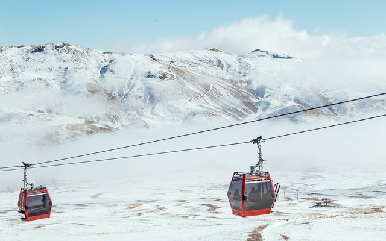
एर्जियेस स्की रिज़ॉर्टकायसेरी · स्की रिज़ॉर्टएरेग्ली संग्रहालयकोन्या · संग्रहालय तात्लीजा जलप्रपात (एर्फ़ेलेक)सिनोप · जलप्रपात
तात्लीजा जलप्रपात (एर्फ़ेलेक)सिनोप · जलप्रपात एरिमतान पुरातत्व और कला संग्रहालयअंकारा · संग्रहालयएर्मेनेक अहमत केलेशोग्लु पुरातत्व और नृवंशविज्ञान संग्रहालयकरामान · संग्रहालय
एरिमतान पुरातत्व और कला संग्रहालयअंकारा · संग्रहालयएर्मेनेक अहमत केलेशोग्लु पुरातत्व और नृवंशविज्ञान संग्रहालयकरामान · संग्रहालय एरिथ्राय प्राचीन नगरइज़मिर · पुरातात्विक स्थल
एरिथ्राय प्राचीन नगरइज़मिर · पुरातात्विक स्थल एर्ज़िंजान संग्रहालयएर्ज़िंजान · संग्रहालय
एर्ज़िंजान संग्रहालयएर्ज़िंजान · संग्रहालय एर्ज़ुरुम अतातुर्क गृह संग्रहालयएर्ज़ुरुम · संग्रहालय
एर्ज़ुरुम अतातुर्क गृह संग्रहालयएर्ज़ुरुम · संग्रहालय एर्ज़ुरुम क़िलाएर्ज़ुरुम · क़िला और ऐतिहासिक इमारत
एर्ज़ुरुम क़िलाएर्ज़ुरुम · क़िला और ऐतिहासिक इमारत एर्ज़ुरुम संग्रहालयएर्ज़ुरुम · संग्रहालयएर्ज़ुरुम चित्रकला और मूर्तिकला संग्रहालयएर्ज़ुरुम · संग्रहालय
एर्ज़ुरुम संग्रहालयएर्ज़ुरुम · संग्रहालयएर्ज़ुरुम चित्रकला और मूर्तिकला संग्रहालयएर्ज़ुरुम · संग्रहालय पुराना स्मिर्नाइज़मिर · पुरातात्विक स्थल
पुराना स्मिर्नाइज़मिर · पुरातात्विक स्थल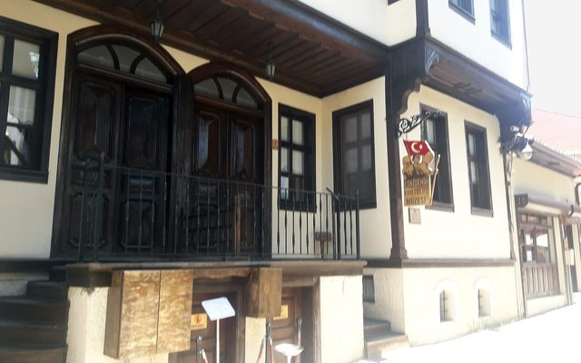
एस्कीशेहिर मुक्ति संग्रहालयएस्कीशेहिर · संग्रहालयएतेन्नाअंताल्या · पुरातात्विक स्थल एती पुरातत्व संग्रहालयएस्कीशेहिर · संग्रहालय
एती पुरातत्व संग्रहालयएस्कीशेहिर · संग्रहालय नृवंशविज्ञान संग्रहालयअंकारा · संग्रहालय
नृवंशविज्ञान संग्रहालयअंकारा · संग्रहालय एवलिया चेलेबी मार्गक्युताह्या · ट्रेकिंग मार्ग
एवलिया चेलेबी मार्गक्युताह्या · ट्रेकिंग मार्ग एयूप सुल्तान मस्जिदइस्तांबुल · धार्मिक इमारत
एयूप सुल्तान मस्जिदइस्तांबुल · धार्मिक इमारत एगिल किला और पैग़ंबर मक़बरेदियारबाकिर · क़िला और ऐतिहासिक इमारत
एगिल किला और पैग़ंबर मक़बरेदियारबाकिर · क़िला और ऐतिहासिक इमारत एगिर्दिर झीलइस्पार्ता · झील
एगिर्दिर झीलइस्पार्ता · झील शिक्षा कार्टून संग्रहालयएस्कीशेहिर · संग्रहालय
शिक्षा कार्टून संग्रहालयएस्कीशेहिर · संग्रहालय फ़ासिल्लार स्मारककोन्या · पुरातात्विक स्थल
फ़ासिल्लार स्मारककोन्या · पुरातात्विक स्थल विश्वव्यापी पैट्रियार्केट और संत जॉर्ज गिरजाघरइस्तांबुल · धार्मिक इमारत
विश्वव्यापी पैट्रियार्केट और संत जॉर्ज गिरजाघरइस्तांबुल · धार्मिक इमारत फ़ेनेरबाचे संग्रहालयइस्तांबुल · संग्रहालय
फ़ेनेरबाचे संग्रहालयइस्तांबुल · संग्रहालय फ़ेतिये गेमिलर द्वीपमुग़ला · पुरातात्विक स्थल
फ़ेतिये गेमिलर द्वीपमुग़ला · पुरातात्विक स्थल फ़ेतिये कायाकोयमुग़ला · पुरातात्विक स्थल
फ़ेतिये कायाकोयमुग़ला · पुरातात्विक स्थल फ़ेतिये लेटून पुरातात्विक स्थलमुग़ला · पुरातात्विक स्थल
फ़ेतिये लेटून पुरातात्विक स्थलमुग़ला · पुरातात्विक स्थल फ़ेतिये संग्रहालयइस्तांबुल · संग्रहालय
फ़ेतिये संग्रहालयइस्तांबुल · संग्रहालय फ़ेतिये संग्रहालयमुग़ला · संग्रहालय
फ़ेतिये संग्रहालयमुग़ला · संग्रहालय फ़ेतिये पिनारा पुरातात्विक स्थलमुग़ला · पुरातात्विक स्थल
फ़ेतिये पिनारा पुरातात्विक स्थलमुग़ला · पुरातात्विक स्थल त्लोस पुरातात्विक स्थल (फ़ेतिये)मुग़ला · पुरातात्विक स्थलफ़िलदामी हौज़इस्तांबुल · क़िला और ऐतिहासिक इमारत
त्लोस पुरातात्विक स्थल (फ़ेतिये)मुग़ला · पुरातात्विक स्थलफ़िलदामी हौज़इस्तांबुल · क़िला और ऐतिहासिक इमारत फ़िल्योस (तियोस) पुरातात्विक स्थलज़ोंगुलदाक · पुरातात्विक स्थल
फ़िल्योस (तियोस) पुरातात्विक स्थलज़ोंगुलदाक · पुरातात्विक स्थल फ़्लोर्या अतातुर्क समुद्री मंडपइस्तांबुल · संग्रहालय
फ़्लोर्या अतातुर्क समुद्री मंडपइस्तांबुल · संग्रहालय फ़्रीजियाई मार्गएस्कीशेहिर · ट्रेकिंग मार्ग
फ़्रीजियाई मार्गएस्कीशेहिर · ट्रेकिंग मार्ग फ़िरतीना धारारिज़े · राफ़्टिंगगागाईअंताल्या · पुरातात्विक स्थल
फ़िरतीना धारारिज़े · राफ़्टिंगगागाईअंताल्या · पुरातात्विक स्थल गलाता मेवलेवीख़ाना संग्रहालयइस्तांबुल · संग्रहालय
गलाता मेवलेवीख़ाना संग्रहालयइस्तांबुल · संग्रहालय ग़ाज़ी कोश्कूदियारबाकिर · क़िला और ऐतिहासिक इमारत
ग़ाज़ी कोश्कूदियारबाकिर · क़िला और ऐतिहासिक इमारत ग़ाज़ी संग्रहालयसामसुन · संग्रहालय
ग़ाज़ी संग्रहालयसामसुन · संग्रहालय गाज़ियांतेप पुरातत्व संग्रहालयगाज़ियांतेप · संग्रहालय
गाज़ियांतेप पुरातत्व संग्रहालयगाज़ियांतेप · संग्रहालय गाज़ियांतेप क़िलागाज़ियांतेप · क़िला और ऐतिहासिक इमारत
गाज़ियांतेप क़िलागाज़ियांतेप · क़िला और ऐतिहासिक इमारत गाज़ियांतेप रक्षा पैनोरमा संग्रहालयगाज़ियांतेप · संग्रहालय
गाज़ियांतेप रक्षा पैनोरमा संग्रहालयगाज़ियांतेप · संग्रहालय गेलिबोलु युद्ध संग्रहालयचानाक्काले · संग्रहालय
गेलिबोलु युद्ध संग्रहालयचानाक्काले · संग्रहालय गैलीपोली ऐतिहासिक क्षेत्रचानाक्काले · पुरातात्विक स्थल
गैलीपोली ऐतिहासिक क्षेत्रचानाक्काले · पुरातात्विक स्थल गेर्गा पवित्र स्थलआयदिन · पुरातात्विक स्थलजर्मानिकिया मोज़ेक क्षेत्रकहरामानमाराश · पुरातात्विक स्थल
गेर्गा पवित्र स्थलआयदिन · पुरातात्विक स्थलजर्मानिकिया मोज़ेक क्षेत्रकहरामानमाराश · पुरातात्विक स्थल गिरेसुन किलागिरेसुन · क़िला और ऐतिहासिक इमारत
गिरेसुन किलागिरेसुन · क़िला और ऐतिहासिक इमारत गिरेसुन संग्रहालयगिरेसुन · संग्रहालय
गिरेसुन संग्रहालयगिरेसुन · संग्रहालय गिर्लेविक जलप्रपातएर्ज़िंजान · जलप्रपात
गिर्लेविक जलप्रपातएर्ज़िंजान · जलप्रपात किरेनिया पर्वत पैदल मार्गगिर्ने (किरेनिया) · ट्रेकिंग मार्ग
किरेनिया पर्वत पैदल मार्गगिर्ने (किरेनिया) · ट्रेकिंग मार्ग किरेनिया किला और जहाज़-अवशेष संग्रहालयगिर्ने (किरेनिया) · क़िला और ऐतिहासिक इमारत
किरेनिया किला और जहाज़-अवशेष संग्रहालयगिर्ने (किरेनिया) · क़िला और ऐतिहासिक इमारत किरेनिया आइकन संग्रहालयगिर्ने (किरेनिया) · संग्रहालय
किरेनिया आइकन संग्रहालयगिर्ने (किरेनिया) · संग्रहालय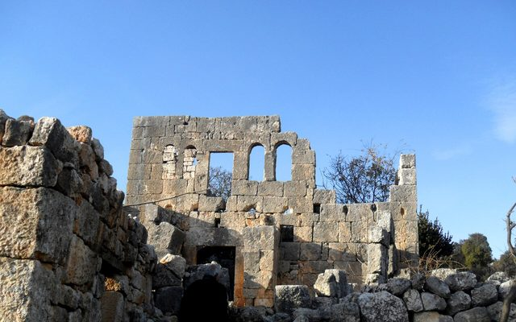
गोकालेमेर्सिन · पुरातात्विक स्थल गोकयाय फ़ाउंडेशन शतरंज संग्रहालयअंकारा · संग्रहालय
गोकयाय फ़ाउंडेशन शतरंज संग्रहालयअंकारा · संग्रहालय गोलजुक क्रेटर झील प्रकृति उद्यानइस्पार्ता · झील
गोलजुक क्रेटर झील प्रकृति उद्यानइस्पार्ता · झील गोल्याज़ी (रिंडाकोस का अपोलोनिया)बुर्सा · पुरातात्विक स्थल
गोल्याज़ी (रिंडाकोस का अपोलोनिया)बुर्सा · पुरातात्विक स्थल गोयनुक घाटीअंताल्या · घाटी (कैन्यन)
गोयनुक घाटीअंताल्या · घाटी (कैन्यन)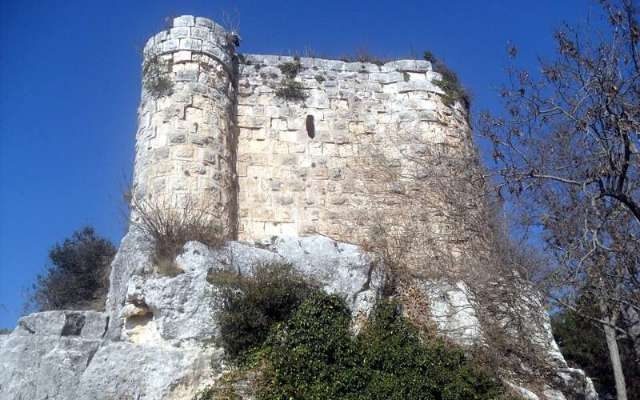
ग्योज़्ने क़िलामेर्सिन · क़िला और ऐतिहासिक इमारत ग्युलशेहिर संत योहन्ना चर्चनेवशेहिर · धार्मिक इमारतग्युम्युशहाने संग्रहालयग्युम्युशहाने · संग्रहालय
ग्युलशेहिर संत योहन्ना चर्चनेवशेहिर · धार्मिक इमारतग्युम्युशहाने संग्रहालयग्युम्युशहाने · संग्रहालय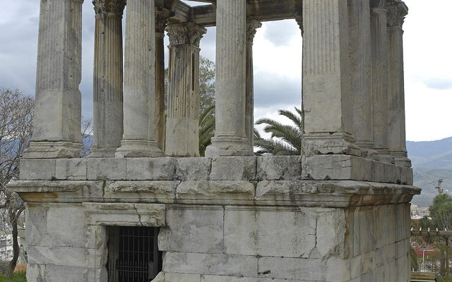
ग्युमुशकेसेन समाधिमुग़ला · पुरातात्विक स्थल ग्युम्युश्लेर मठ और भूमिगत नगरनिगदे · भूमिगत नगर
ग्युम्युश्लेर मठ और भूमिगत नगरनिगदे · भूमिगत नगर ग्युपग्युपोग्लु हवेली नृवंशविज्ञान संग्रहालयकायसेरी · संग्रहालय
ग्युपग्युपोग्लु हवेली नृवंशविज्ञान संग्रहालयकायसेरी · संग्रहालय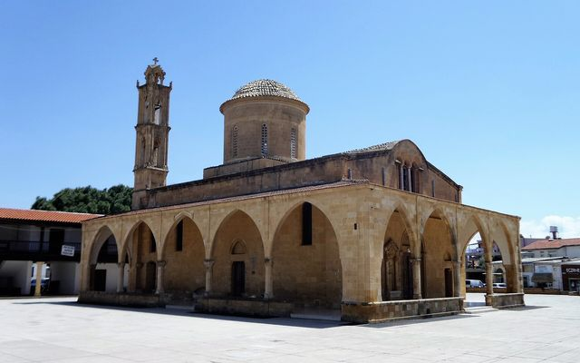
ग्युज़ेलयुर्त पुरातत्व और प्राकृतिक इतिहास संग्रहालयग्युज़ेलयुर्त (मोर्फ़ू) · संग्रहालय ग्युज़ेलयुर्त और मठ घाटीअक्साराय · धार्मिक इमारत
ग्युज़ेलयुर्त और मठ घाटीअक्साराय · धार्मिक इमारत क्तुत्स मठवान · धार्मिक इमारत
क्तुत्स मठवान · धार्मिक इमारत हबीब-ए-नज्जार मस्जिदहताय · धार्मिक इमारत
हबीब-ए-नज्जार मस्जिदहताय · धार्मिक इमारत हाजी बायराम वली मस्जिदअंकारा · धार्मिक इमारत
हाजी बायराम वली मस्जिदअंकारा · धार्मिक इमारत हाजीबेक्ताश संग्रहालयनेवशेहिर · संग्रहालय
हाजीबेक्ताश संग्रहालयनेवशेहिर · संग्रहालय हाजीलार होयुकबुर्दुर · पुरातात्विक स्थल
हाजीलार होयुकबुर्दुर · पुरातात्विक स्थल हेड्रियन द्वार (उचकापिलार)अंताल्या · क़िला और ऐतिहासिक इमारत
हेड्रियन द्वार (उचकापिलार)अंताल्या · क़िला और ऐतिहासिक इमारत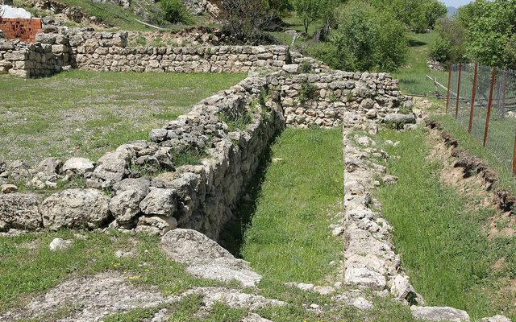
हैड्रियानोपोलिस पुरातात्विक स्थलकाराब्युक · पुरातात्विक स्थल हाफ़िज़ा 15 जुलाई संग्रहालयइस्तांबुल · संग्रहालयहक्कारी का मेयदान मदरसाहक्कारी · क़िला और ऐतिहासिक इमारत
हाफ़िज़ा 15 जुलाई संग्रहालयइस्तांबुल · संग्रहालयहक्कारी का मेयदान मदरसाहक्कारी · क़िला और ऐतिहासिक इमारत हालेप्लीबाहचे मोज़ेक संग्रहालयशानलीउर्फ़ा · संग्रहालयहमीदिये तोपख़ाना और चानाक्काले युद्ध इतिहास संग्रहालयचानाक्काले · संग्रहालय
हालेप्लीबाहचे मोज़ेक संग्रहालयशानलीउर्फ़ा · संग्रहालयहमीदिये तोपख़ाना और चानाक्काले युद्ध इतिहास संग्रहालयचानाक्काले · संग्रहालय ख़ान अल-बारूर सरायशानलीउर्फ़ा · क़िला और ऐतिहासिक इमारतहरबिये जलप्रपातहताय · जलप्रपात
ख़ान अल-बारूर सरायशानलीउर्फ़ा · क़िला और ऐतिहासिक इमारतहरबिये जलप्रपातहताय · जलप्रपात हरपुत क़िलाएलाज़िग · क़िला और ऐतिहासिक इमारत
हरपुत क़िलाएलाज़िग · क़िला और ऐतिहासिक इमारत हर्रान पुरातात्विक स्थलशानलीउर्फ़ा · पुरातात्विक स्थल
हर्रान पुरातात्विक स्थलशानलीउर्फ़ा · पुरातात्विक स्थल हरशेना किलाअमास्या · क़िला और ऐतिहासिक इमारत
हरशेना किलाअमास्या · क़िला और ऐतिहासिक इमारत हसन पाशा सरायदियारबाकिर · क़िला और ऐतिहासिक इमारत
हसन पाशा सरायदियारबाकिर · क़िला और ऐतिहासिक इमारत हसन सूज़र नृवंशविज्ञान संग्रहालयगाज़ियांतेप · संग्रहालय
हसन सूज़र नृवंशविज्ञान संग्रहालयगाज़ियांतेप · संग्रहालय हसनकेफ़ संग्रहालय और पुरातात्विक स्थलबातमान · पुरातात्विक स्थल
हसनकेफ़ संग्रहालय और पुरातात्विक स्थलबातमान · पुरातात्विक स्थल हताय पुरातत्व संग्रहालयहताय · संग्रहालयहताय नेजमी आसफ़ुरोग्लु पुरातत्व संग्रहालयहताय · संग्रहालय
हताय पुरातत्व संग्रहालयहताय · संग्रहालयहताय नेजमी आसफ़ुरोग्लु पुरातत्व संग्रहालयहताय · संग्रहालय अंकारा वायुसेना संग्रहालयअंकारा · संग्रहालय
अंकारा वायुसेना संग्रहालयअंकारा · संग्रहालय प्रेरितों का गिरजा (कुम्बेत मस्जिद)कार्स · धार्मिक इमारतहावज़ा अतातुर्क भवनसामसुन · संग्रहालय
प्रेरितों का गिरजा (कुम्बेत मस्जिद)कार्स · धार्मिक इमारतहावज़ा अतातुर्क भवनसामसुन · संग्रहालय हज़ार झीलएलाज़िग · झील
हज़ार झीलएलाज़िग · झील हाज़ेरानलार हवेलीअमास्या · संग्रहालय
हाज़ेरानलार हवेलीअमास्या · संग्रहालय हेल्स स्मारकचानाक्काले · पुरातात्विक स्थल
हेल्स स्मारकचानाक्काले · पुरातात्विक स्थल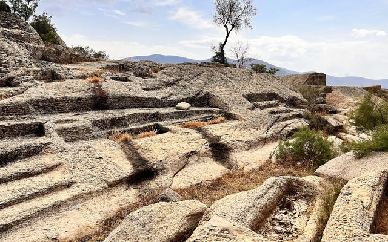
लातमोस का हेराक्लेयामुग़ला · पुरातात्विक स्थल हेराक्लिया साल्बाकेदेनिज़्ली · पुरातात्विक स्थल
हेराक्लिया साल्बाकेदेनिज़्ली · पुरातात्विक स्थल हिएरापोलिस (पामुक्काले) पुरातत्व संग्रहालयदेनिज़्ली · संग्रहालयहिल्मी नाकिपोउलु कैमरा संग्रहालयइस्तांबुल · संग्रहालयहिसार्त जीवंत इतिहास और डायोरामा संग्रहालयइस्तांबुल · संग्रहालय
हिएरापोलिस (पामुक्काले) पुरातत्व संग्रहालयदेनिज़्ली · संग्रहालयहिल्मी नाकिपोउलु कैमरा संग्रहालयइस्तांबुल · संग्रहालयहिसार्त जीवंत इतिहास और डायोरामा संग्रहालयइस्तांबुल · संग्रहालय हित्ती मार्गचोरुम · ट्रेकिंग मार्ग
हित्ती मार्गचोरुम · ट्रेकिंग मार्ग होरमा घाटीकस्तामोनु · घाटी (कैन्यन)
होरमा घाटीकस्तामोनु · घाटी (कैन्यन) होशाप किलावान · क़िला और ऐतिहासिक इमारतहिल्लारिमामुग़ला · पुरातात्विक स्थल
होशाप किलावान · क़िला और ऐतिहासिक इमारतहिल्लारिमामुग़ला · पुरातात्विक स्थल इआसोस पुरातात्विक स्थलमुग़ला · पुरातात्विक स्थल
इआसोस पुरातात्विक स्थलमुग़ला · पुरातात्विक स्थल इदेबेस्सोसअंताल्या · पुरातात्विक स्थल
इदेबेस्सोसअंताल्या · पुरातात्विक स्थल इहलामुर मंडपइस्तांबुल · क़िला और ऐतिहासिक इमारत
इहलामुर मंडपइस्तांबुल · क़िला और ऐतिहासिक इमारत इहलारा घाटीअक्साराय · पुरातात्विक स्थल
इहलारा घाटीअक्साराय · पुरातात्विक स्थल इल्गाज़ स्की रिज़ॉर्टकस्तामोनु · स्की रिज़ॉर्ट
इल्गाज़ स्की रिज़ॉर्टकस्तामोनु · स्की रिज़ॉर्ट इओतापे प्राचीन नगरअंताल्या · पुरातात्विक स्थल
इओतापे प्राचीन नगरअंताल्या · पुरातात्विक स्थल इरगांदी पुलबुर्सा · क़िला और ऐतिहासिक इमारतइसिंडाअंताल्या · पुरातात्विक स्थल
इरगांदी पुलबुर्सा · क़िला और ऐतिहासिक इमारतइसिंडाअंताल्या · पुरातात्विक स्थल इस्पार्ता संग्रहालयइस्पार्ता · संग्रहालय
इस्पार्ता संग्रहालयइस्पार्ता · संग्रहालय इगदिर तुर्क शहीद स्मारक और संग्रहालयइगदिर · संग्रहालयजेंडरमेरी संग्रहालयअंकारा · संग्रहालय
इगदिर तुर्क शहीद स्मारक और संग्रहालयइगदिर · संग्रहालयजेंडरमेरी संग्रहालयअंकारा · संग्रहालय जूलियोपोलिस क़ब्रिस्तानअंकारा · पुरातात्विक स्थल
जूलियोपोलिस क़ब्रिस्तानअंकारा · पुरातात्विक स्थल जस्टिनियन पुल (बेशकोप्रु)साकार्या · क़िला और ऐतिहासिक इमारत
जस्टिनियन पुल (बेशकोप्रु)साकार्या · क़िला और ऐतिहासिक इमारत काबातेपे सूचना केंद्रचानाक्काले · संग्रहालय
काबातेपे सूचना केंद्रचानाक्काले · संग्रहालय कादिफ़ेकाले (पागोस पहाड़ी)इज़मिर · क़िला और ऐतिहासिक इमारत
कादिफ़ेकाले (पागोस पहाड़ी)इज़मिर · क़िला और ऐतिहासिक इमारत कादियांदा प्राचीन नगरमुग़ला · पुरातात्विक स्थलकादीकालेसी पुरातात्विक स्थलआयदिन · पुरातात्विक स्थलकाहरामानकाज़ान 15 जुलाई शहीद और लोकतंत्र संग्रहालयअंकारा · संग्रहालय
कादियांदा प्राचीन नगरमुग़ला · पुरातात्विक स्थलकादीकालेसी पुरातात्विक स्थलआयदिन · पुरातात्विक स्थलकाहरामानकाज़ान 15 जुलाई शहीद और लोकतंत्र संग्रहालयअंकारा · संग्रहालय काहरामानमाराश संग्रहालयकहरामानमाराश · संग्रहालय
काहरामानमाराश संग्रहालयकहरामानमाराश · संग्रहालय काहता येनीकाले क़िलाआदियामान · पुरातात्विक स्थल
काहता येनीकाले क़िलाआदियामान · पुरातात्विक स्थल कामान कालेह्यूयुक पुरातत्व संग्रहालयकिरशेहिर · पुरातात्विक स्थलकांदिल्ली भूकंप संग्रहालयइस्तांबुल · संग्रहालयकांदिबाअंताल्या · पुरातात्विक स्थल
कामान कालेह्यूयुक पुरातत्व संग्रहालयकिरशेहिर · पुरातात्विक स्थलकांदिल्ली भूकंप संग्रहालयइस्तांबुल · संग्रहालयकांदिबाअंताल्या · पुरातात्विक स्थल कानलीदिवाने पुरातात्विक स्थलमेर्सिन · पुरातात्विक स्थल
कानलीदिवाने पुरातात्विक स्थलमेर्सिन · पुरातात्विक स्थल कानलिदिवाने (कानितेलिस)मेर्सिन · पुरातात्विक स्थल
कानलिदिवाने (कानितेलिस)मेर्सिन · पुरातात्विक स्थल कांतारा किलाइस्केले (त्रिकोमो) · क़िला और ऐतिहासिक इमारत
कांतारा किलाइस्केले (त्रिकोमो) · क़िला और ऐतिहासिक इमारत कापुज़बाशी जलप्रपातकायसेरी · जलप्रपात
कापुज़बाशी जलप्रपातकायसेरी · जलप्रपात कापिलिकाया शैल मकबराचोरुम · पुरातात्विक स्थल
कापिलिकाया शैल मकबराचोरुम · पुरातात्विक स्थल कराबेल शैल उभारइज़मिर · पुरातात्विक स्थल
कराबेल शैल उभारइज़मिर · पुरातात्विक स्थल सफ़रानबोलु संग्रहालयकाराब्युक · संग्रहालय
सफ़रानबोलु संग्रहालयकाराब्युक · संग्रहालय काराजासु नृवंशविज्ञान संग्रहालयआयदिन · संग्रहालय
काराजासु नृवंशविज्ञान संग्रहालयआयदिन · संग्रहालय कारादेनिज़ एरेग्ली संग्रहालयज़ोंगुलदाक · संग्रहालय
कारादेनिज़ एरेग्ली संग्रहालयज़ोंगुलदाक · संग्रहालय काराग्योल (बोरचका)आर्तविन · झील
काराग्योल (बोरचका)आर्तविन · झील काराहानतेपे पुरातात्विक स्थलशानलीउर्फ़ा · पुरातात्विक स्थल
काराहानतेपे पुरातात्विक स्थलशानलीउर्फ़ा · पुरातात्विक स्थल कराइन गुफाअंताल्या · प्राकृतिक स्थल
कराइन गुफाअंताल्या · प्राकृतिक स्थल काराकाबाकलीमेर्सिन · पुरातात्विक स्थल
काराकाबाकलीमेर्सिन · पुरातात्विक स्थल काराकुश टीलाआदियामान · पुरातात्विक स्थल
काराकुश टीलाआदियामान · पुरातात्विक स्थल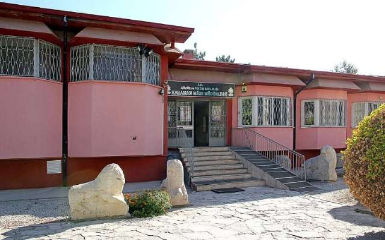
करामान संग्रहालयकरामान · संग्रहालय अँधेरी घाटी (करानलिक कैन्यन)एर्ज़िंजान · घाटी (कैन्यन)
अँधेरी घाटी (करानलिक कैन्यन)एर्ज़िंजान · घाटी (कैन्यन) कराताय (टाइल कृतियाँ) संग्रहालयकोन्या · संग्रहालय
कराताय (टाइल कृतियाँ) संग्रहालयकोन्या · संग्रहालय कराटेपे-अस्लानताश संग्रहालय और पुरातात्विक स्थलओस्मानिये · पुरातात्विक स्थल
कराटेपे-अस्लानताश संग्रहालय और पुरातात्विक स्थलओस्मानिये · पुरातात्विक स्थल कारियाई मार्गमुग़ला · ट्रेकिंग मार्ग
कारियाई मार्गमुग़ला · ट्रेकिंग मार्ग करिये मस्जिद (खोरा)इस्तांबुल · धार्मिक इमारत
करिये मस्जिद (खोरा)इस्तांबुल · धार्मिक इमारत कारकेमिश प्राचीन नगरगाज़ियांतेप · पुरातात्विक स्थल
कारकेमिश प्राचीन नगरगाज़ियांतेप · पुरातात्विक स्थल कार्पाज़ राष्ट्रीय उद्यान और गोल्डन बीचइस्केले (त्रिकोमो) · प्राकृतिक स्थल
कार्पाज़ राष्ट्रीय उद्यान और गोल्डन बीचइस्केले (त्रिकोमो) · प्राकृतिक स्थल कार्स कॉकेशस मोर्चा युद्ध इतिहास संग्रहालयकार्स · संग्रहालय
कार्स कॉकेशस मोर्चा युद्ध इतिहास संग्रहालयकार्स · संग्रहालय कार्स किलाकार्स · क़िला और ऐतिहासिक इमारत
कार्स किलाकार्स · क़िला और ऐतिहासिक इमारत कार्स संग्रहालयकार्स · संग्रहालयकार्तालकाया स्की रिज़ॉर्टबोलू · स्की रिज़ॉर्ट
कार्स संग्रहालयकार्स · संग्रहालयकार्तालकाया स्की रिज़ॉर्टबोलू · स्की रिज़ॉर्ट कार्तेपे स्की रिज़ॉर्टकोजाएली · स्की रिज़ॉर्ट
कार्तेपे स्की रिज़ॉर्टकोजाएली · स्की रिज़ॉर्ट कास्ताबाला पुरातात्विक स्थलओस्मानिये · पुरातात्विक स्थल
कास्ताबाला पुरातात्विक स्थलओस्मानिये · पुरातात्विक स्थल कस्तामोनु संग्रहालयकस्तामोनु · संग्रहालय
कस्तामोनु संग्रहालयकस्तामोनु · संग्रहालय क़ासिमिये मदरसामार्दिन · धार्मिक इमारत
क़ासिमिये मदरसामार्दिन · धार्मिक इमारत कौनोस पुरातात्विक स्थलमुग़ला · पुरातात्विक स्थल
कौनोस पुरातात्विक स्थलमुग़ला · पुरातात्विक स्थल कायसेरी पुरातत्व संग्रहालयकायसेरी · संग्रहालय
कायसेरी पुरातत्व संग्रहालयकायसेरी · संग्रहालय कायसेरी अतातुर्क गृह संग्रहालयकायसेरी · संग्रहालय
कायसेरी अतातुर्क गृह संग्रहालयकायसेरी · संग्रहालय कैसेरी किलाकायसेरी · क़िला और ऐतिहासिक इमारत
कैसेरी किलाकायसेरी · क़िला और ऐतिहासिक इमारत काचकार पर्वतरिज़े · ट्रेकिंग मार्ग
काचकार पर्वतरिज़े · ट्रेकिंग मार्ग केकोवा डूबा नगरअंताल्या · पुरातात्विक स्थल
केकोवा डूबा नगरअंताल्या · पुरातात्विक स्थल केलेंदेरिस प्राचीन नगरमेर्सिन · पुरातात्विक स्थल
केलेंदेरिस प्राचीन नगरमेर्सिन · पुरातात्विक स्थल केमाल सुनाल संग्रहालयइस्तांबुल · संग्रहालय
केमाल सुनाल संग्रहालयइस्तांबुल · संग्रहालय केमालिये (एगिन)एर्ज़िंजान · क़िला और ऐतिहासिक इमारत
केमालिये (एगिन)एर्ज़िंजान · क़िला और ऐतिहासिक इमारत केमेर पुलमुग़ला · क़िला और ऐतिहासिक इमारत
केमेर पुलमुग़ला · क़िला और ऐतिहासिक इमारत केरामोस प्राचीन नगरमुग़ला · पुरातात्विक स्थल
केरामोस प्राचीन नगरमुग़ला · पुरातात्विक स्थल केर्केनेस प्राचीन नगरयोज़गात · पुरातात्विक स्थल
केर्केनेस प्राचीन नगरयोज़गात · पुरातात्विक स्थल केस्किन सुलु मग़ारा भूमिगत नगरकिरिक्काले · भूमिगत नगर
केस्किन सुलु मग़ारा भूमिगत नगरकिरिक्काले · भूमिगत नगर की म्यूज़ियमइज़मिर · संग्रहालय
की म्यूज़ियमइज़मिर · संग्रहालय किबिरा पुरातात्विक स्थलबुर्दुर · पुरातात्विक स्थलकिलिस संग्रहालयकिलिस · संग्रहालय
किबिरा पुरातात्विक स्थलबुर्दुर · पुरातात्विक स्थलकिलिस संग्रहालयकिलिस · संग्रहालय किलिस्त्राकोन्या · पुरातात्विक स्थल
किलिस्त्राकोन्या · पुरातात्विक स्थल किलितबाहिर क़िला संग्रहालयचानाक्काले · संग्रहालय
किलितबाहिर क़िला संग्रहालयचानाक्काले · संग्रहालय किलितबहिर किलाचानाक्काले · क़िला और ऐतिहासिक इमारत
किलितबहिर किलाचानाक्काले · क़िला और ऐतिहासिक इमारत कितानाउराअंताल्या · पुरातात्विक स्थल
कितानाउराअंताल्या · पुरातात्विक स्थल क्लारोस पुरातात्विक स्थलइज़मिर · पुरातात्विक स्थल
क्लारोस पुरातात्विक स्थलइज़मिर · पुरातात्विक स्थल क्लाज़ोमेनाई पुरातात्विक स्थलइज़मिर · पुरातात्विक स्थल
क्लाज़ोमेनाई पुरातात्विक स्थलइज़मिर · पुरातात्विक स्थल कोजाएली पुरातत्व संग्रहालयकोजाएली · संग्रहालय
कोजाएली पुरातत्व संग्रहालयकोजाएली · संग्रहालय कोलोफ़ोनइज़मिर · पुरातात्विक स्थलकोमाना पोंतिकातोकात · पुरातात्विक स्थल
कोलोफ़ोनइज़मिर · पुरातात्विक स्थलकोमाना पोंतिकातोकात · पुरातात्विक स्थल कोनुराल्प संग्रहालयद्यूज़जे · संग्रहालय
कोनुराल्प संग्रहालयद्यूज़जे · संग्रहालय कोन्या पुरातत्व संग्रहालयकोन्या · संग्रहालय
कोन्या पुरातत्व संग्रहालयकोन्या · संग्रहालय कोन्या अतातुर्क गृह संग्रहालयकोन्या · संग्रहालय
कोन्या अतातुर्क गृह संग्रहालयकोन्या · संग्रहालय कोन्या नृवंशविज्ञान संग्रहालयकोन्या · संग्रहालय
कोन्या नृवंशविज्ञान संग्रहालयकोन्या · संग्रहालय कोन्या पैनोरमा संग्रहालयकोन्या · संग्रहालयकोरीडाल्लाअंताल्या · पुरातात्विक स्थल
कोन्या पैनोरमा संग्रहालयकोन्या · संग्रहालयकोरीडाल्लाअंताल्या · पुरातात्विक स्थल कोरिकोस और किज़कालेमेर्सिन · क़िला और ऐतिहासिक इमारत
कोरिकोस और किज़कालेमेर्सिन · क़िला और ऐतिहासिक इमारत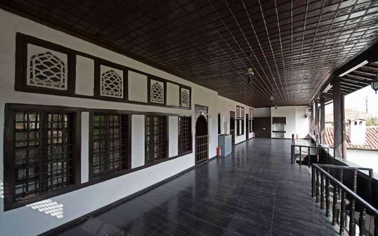
कोशूत गृह संग्रहालयक्युताह्या · संग्रहालय कोशुत गृह संग्रहालयक्युताह्या · संग्रहालय
कोशुत गृह संग्रहालयक्युताह्या · संग्रहालय कोज़ा हानबुर्सा · क़िला और ऐतिहासिक इमारतशाही मकबरे संग्रहालय और पुरातात्विक स्थलग़ाज़ीमागुसा (फ़ामागुस्ता) · पुरातात्विक स्थल
कोज़ा हानबुर्सा · क़िला और ऐतिहासिक इमारतशाही मकबरे संग्रहालय और पुरातात्विक स्थलग़ाज़ीमागुसा (फ़ामागुस्ता) · पुरातात्विक स्थल क्रेमना प्राचीन नगरबुर्दुर · पुरातात्विक स्थल
क्रेमना प्राचीन नगरबुर्दुर · पुरातात्विक स्थल कुबादाबाद महलकोन्या · पुरातात्विक स्थल
कुबादाबाद महलकोन्या · पुरातात्विक स्थल स्वतंत्रता संग्राम संग्रहालयअंकारा · संग्रहालय
स्वतंत्रता संग्राम संग्रहालयअंकारा · संग्रहालय कुरुक्योप्रू स्मारक संग्रहालय और पारंपरिक अदाना घरअदाना · संग्रहालय
कुरुक्योप्रू स्मारक संग्रहालय और पारंपरिक अदाना घरअदाना · संग्रहालय कुर्शुनलू जलप्रपात प्रकृति उद्यानअंताल्या · जलप्रपात
कुर्शुनलू जलप्रपात प्रकृति उद्यानअंताल्या · जलप्रपात कुवा-यी मिल्लिये संग्रहालयबालिकेसिर · संग्रहालय
कुवा-यी मिल्लिये संग्रहालयबालिकेसिर · संग्रहालय कियानेआई प्राचीन नगरअंताल्या · पुरातात्विक स्थल
कियानेआई प्राचीन नगरअंताल्या · पुरातात्विक स्थल किमे प्राचीन नगरइज़मिर · पुरातात्विक स्थल
किमे प्राचीन नगरइज़मिर · पुरातात्विक स्थल किज़िकोस प्राचीन नगरबालिकेसिर · पुरातात्विक स्थल
किज़िकोस प्राचीन नगरबालिकेसिर · पुरातात्विक स्थल काज़िम काराबेकिर पाशा संग्रहालयइस्तांबुल · संग्रहालय
काज़िम काराबेकिर पाशा संग्रहालयइस्तांबुल · संग्रहालय क्योप्रुलु घाटी राष्ट्रीय उद्यानअंताल्या · घाटी (कैन्यन)
क्योप्रुलु घाटी राष्ट्रीय उद्यानअंताल्या · घाटी (कैन्यन) क्योप्रुपाज़ार पुल (आस्पेंदोस)अंताल्या · क़िला और ऐतिहासिक इमारत
क्योप्रुपाज़ार पुल (आस्पेंदोस)अंताल्या · क़िला और ऐतिहासिक इमारत क्योयजेइज़ झीलमुग़ला · झील
क्योयजेइज़ झीलमुग़ला · झील क्यूल्तेपे पुरातात्विक स्थलकायसेरी · पुरातात्विक स्थल
क्यूल्तेपे पुरातात्विक स्थलकायसेरी · पुरातात्विक स्थल कुताह्या किलाक्युताह्या · क़िला और ऐतिहासिक इमारतक्युताह्या संग्रहालयक्युताह्या · संग्रहालय
कुताह्या किलाक्युताह्या · क़िला और ऐतिहासिक इमारतक्युताह्या संग्रहालयक्युताह्या · संग्रहालय छोटा अयवासील संत ऐनी चर्चत्राबज़ोन · धार्मिक इमारत
छोटा अयवासील संत ऐनी चर्चत्राबज़ोन · धार्मिक इमारत कुचुकसु मंडपइस्तांबुल · क़िला और ऐतिहासिक इमारत
कुचुकसु मंडपइस्तांबुल · क़िला और ऐतिहासिक इमारत किर्कलारेली संग्रहालयकिर्कलारेली · संग्रहालयकिरशेहिर संग्रहालयकिरशेहिर · संग्रहालय
किर्कलारेली संग्रहालयकिर्कलारेली · संग्रहालयकिरशेहिर संग्रहालयकिरशेहिर · संग्रहालय मेडन्स टावर (क्ज़ कुलेसी)इस्तांबुल · क़िला और ऐतिहासिक इमारत
मेडन्स टावर (क्ज़ कुलेसी)इस्तांबुल · क़िला और ऐतिहासिक इमारत क़िज़िलकुले (लाल मीनार)अंताल्या · क़िला और ऐतिहासिक इमारत
क़िज़िलकुले (लाल मीनार)अंताल्या · क़िला और ऐतिहासिक इमारत लाब्राउंडा पुरातात्विक स्थलमुग़ला · पुरातात्विक स्थल
लाब्राउंडा पुरातात्विक स्थलमुग़ला · पुरातात्विक स्थल लागिना पुरातात्विक स्थलमुग़ला · पुरातात्विक स्थल
लागिना पुरातात्विक स्थलमुग़ला · पुरातात्विक स्थल लाला मुस्तफ़ा पाशा मस्जिदग़ाज़ीमागुसा (फ़ामागुस्ता) · धार्मिक इमारतलाम्बूसागिर्ने (किरेनिया) · पुरातात्विक स्थललामोसअंताल्या · पुरातात्विक स्थल
लाला मुस्तफ़ा पाशा मस्जिदग़ाज़ीमागुसा (फ़ामागुस्ता) · धार्मिक इमारतलाम्बूसागिर्ने (किरेनिया) · पुरातात्विक स्थललामोसअंताल्या · पुरातात्विक स्थल लाओडिकेया पुरातात्विक स्थलदेनिज़्ली · पुरातात्विक स्थल
लाओडिकेया पुरातात्विक स्थलदेनिज़्ली · पुरातात्विक स्थल लैपिडरी (पत्थर-कृति) संग्रहालयलेफ़कोशा (निकोसिया) · संग्रहालय
लैपिडरी (पत्थर-कृति) संग्रहालयलेफ़कोशा (निकोसिया) · संग्रहालय लतीफ़ े हानिम कोश्क स्मृति गृहइज़मिर · संग्रहालय
लतीफ़ े हानिम कोश्क स्मृति गृहइज़मिर · संग्रहालय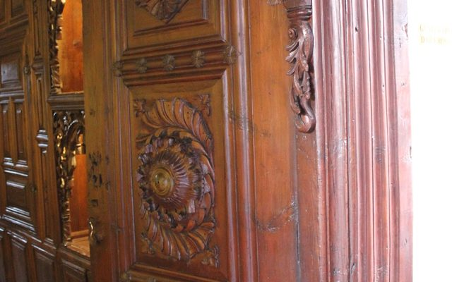
लतीफ़ोग्लू हवेलीतोकात · संग्रहालय लेबेडोसइज़मिर · पुरातात्विक स्थल
लेबेडोसइज़मिर · पुरातात्विक स्थल लिकियाई सभ्यता संग्रहालय और अंद्रियाके पुरातात्विक स्थलअंताल्या · पुरातात्विक स्थल
लिकियाई सभ्यता संग्रहालय और अंद्रियाके पुरातात्विक स्थलअंताल्या · पुरातात्विक स्थल लाइसियन मार्गमुग़ला · ट्रेकिंग मार्ग
लाइसियन मार्गमुग़ला · ट्रेकिंग मार्ग लिमिरा पुरातात्विक स्थलअंताल्या · पुरातात्विक स्थललिवापाशा हवेली नृवंशविज्ञान संग्रहालयकस्तामोनु · संग्रहालय
लिमिरा पुरातात्विक स्थलअंताल्या · पुरातात्विक स्थललिवापाशा हवेली नृवंशविज्ञान संग्रहालयकस्तामोनु · संग्रहालय लोरीमा किलामुग़ला · पुरातात्विक स्थल
लोरीमा किलामुग़ला · पुरातात्विक स्थल लोज़ान स्मारक और कराआगाच स्टेशनएदिर्ने · क़िला और ऐतिहासिक इमारत
लोज़ान स्मारक और कराआगाच स्टेशनएदिर्ने · क़िला और ऐतिहासिक इमारत मीरशॉम संग्रहालयएस्कीशेहिर · संग्रहालयखनन संग्रहालयज़ोंगुलदाक · संग्रहालय
मीरशॉम संग्रहालयएस्कीशेहिर · संग्रहालयखनन संग्रहालयज़ोंगुलदाक · संग्रहालय मागार्सुस प्राचीन नगरअदाना · पुरातात्विक स्थल
मागार्सुस प्राचीन नगरअदाना · पुरातात्विक स्थल मैग्नीसिया पुरातात्विक स्थलआयदिन · पुरातात्विक स्थल
मैग्नीसिया पुरातात्विक स्थलआयदिन · पुरातात्विक स्थल महमूद बे मस्जिदकस्तामोनु · धार्मिक इमारत
महमूद बे मस्जिदकस्तामोनु · धार्मिक इमारत मलाबादी पुलदियारबाकिर · क़िला और ऐतिहासिक इमारतमालात्या अतातुर्क स्मृति-गृह और नृवंशविज्ञान संग्रहालयमालात्या · संग्रहालय
मलाबादी पुलदियारबाकिर · क़िला और ऐतिहासिक इमारतमालात्या अतातुर्क स्मृति-गृह और नृवंशविज्ञान संग्रहालयमालात्या · संग्रहालय मालात्या संग्रहालयमालात्या · संग्रहालयमलाज़गिर्त संग्रहालयमुश · संग्रहालय
मालात्या संग्रहालयमालात्या · संग्रहालयमलाज़गिर्त संग्रहालयमुश · संग्रहालय मामुरे क़िलामेर्सिन · क़िला और ऐतिहासिक इमारत
मामुरे क़िलामेर्सिन · क़िला और ऐतिहासिक इमारत मानावगात जलप्रपातअंताल्या · जलप्रपात
मानावगात जलप्रपातअंताल्या · जलप्रपात मानीसा आकहिसार संग्रहालय और तेपे क़ब्रिस्तानमानीसा · पुरातात्विक स्थल
मानीसा आकहिसार संग्रहालय और तेपे क़ब्रिस्तानमानीसा · पुरातात्विक स्थल मानीसा संग्रहालयमानीसा · संग्रहालय
मानीसा संग्रहालयमानीसा · संग्रहालय मार्दिन संग्रहालयमार्दिन · संग्रहालयमरमरिस संग्रहालयमुग़ला · संग्रहालय
मार्दिन संग्रहालयमार्दिन · संग्रहालयमरमरिस संग्रहालयमुग़ला · संग्रहालय मसलाक मंडपइस्तांबुल · क़िला और ऐतिहासिक इमारत
मसलाक मंडपइस्तांबुल · क़िला और ऐतिहासिक इमारत मासूमियत संग्रहालयइस्तांबुल · संग्रहालयमाज़ी भूमिगत नगरनेवशेहिर · भूमिगत नगर
मासूमियत संग्रहालयइस्तांबुल · संग्रहालयमाज़ी भूमिगत नगरनेवशेहिर · भूमिगत नगर माशात होयुकतोकात · पुरातात्विक स्थलमेहमत आकिफ़ एरसोय साहित्य संग्रहालय पुस्तकालयअंकारा · संग्रहालय
माशात होयुकतोकात · पुरातात्विक स्थलमेहमत आकिफ़ एरसोय साहित्य संग्रहालय पुस्तकालयअंकारा · संग्रहालय मेहमत आकिफ़ एरसोय स्मृति-गृहइस्तांबुल · संग्रहालयमेहमत जाबिर आल्पेर पुरातत्व संग्रहालयबातमान · संग्रहालय
मेहमत आकिफ़ एरसोय स्मृति-गृहइस्तांबुल · संग्रहालयमेहमत जाबिर आल्पेर पुरातत्व संग्रहालयबातमान · संग्रहालय मेके झीलकोन्या · झील
मेके झीलकोन्या · झील मेलेन धाराद्यूज़जे · राफ़्टिंग
मेलेन धाराद्यूज़जे · राफ़्टिंग मेरिच पुल (मजीदिये पुल)एदिर्ने · क़िला और ऐतिहासिक इमारत
मेरिच पुल (मजीदिये पुल)एदिर्ने · क़िला और ऐतिहासिक इमारत मेर्सिन अतातुर्क गृह संग्रहालयमेर्सिन · संग्रहालय
मेर्सिन अतातुर्क गृह संग्रहालयमेर्सिन · संग्रहालय मेर्सिन क़िज़ क़िला (क़िज़कालेसी)मेर्सिन · क़िला और ऐतिहासिक इमारत
मेर्सिन क़िज़ क़िला (क़िज़कालेसी)मेर्सिन · क़िला और ऐतिहासिक इमारत मेर्सिन संग्रहालयमेर्सिन · संग्रहालयमेर्सिन तार्सुस संग्रहालयमेर्सिन · संग्रहालय
मेर्सिन संग्रहालयमेर्सिन · संग्रहालयमेर्सिन तार्सुस संग्रहालयमेर्सिन · संग्रहालय वर्जिन मैरी का घरइज़मिर · धार्मिक इमारत
वर्जिन मैरी का घरइज़मिर · धार्मिक इमारत मरियम माँ मठगिरेसुन · धार्मिक इमारत
मरियम माँ मठगिरेसुन · धार्मिक इमारत मेट्रोपोलिस पुरातात्विक स्थलइज़मिर · पुरातात्विक स्थल
मेट्रोपोलिस पुरातात्विक स्थलइज़मिर · पुरातात्विक स्थल मौलाना संग्रहालयकोन्या · संग्रहालय
मौलाना संग्रहालयकोन्या · संग्रहालय मेवलेवी तेक्के संग्रहालयलेफ़कोशा (निकोसिया) · संग्रहालयमेवलेवीख़ाना संग्रहालयअंताल्या · संग्रहालय
मेवलेवी तेक्के संग्रहालयलेफ़कोशा (निकोसिया) · संग्रहालयमेवलेवीख़ाना संग्रहालयअंताल्या · संग्रहालय मेज़गितकालेमेर्सिन · पुरातात्विक स्थल
मेज़गितकालेमेर्सिन · पुरातात्विक स्थल मेहेर कापीवान · पुरातात्विक स्थल
मेहेर कापीवान · पुरातात्विक स्थल मिडास यज़िलिकाया पुरातात्विक स्थलएस्कीशेहिर · पुरातात्विक स्थल
मिडास यज़िलिकाया पुरातात्विक स्थलएस्कीशेहिर · पुरातात्विक स्थल मिहरिमाह सुल्तान मस्जिद (एदिर्नेकापी)इस्तांबुल · धार्मिक इमारत
मिहरिमाह सुल्तान मस्जिद (एदिर्नेकापी)इस्तांबुल · धार्मिक इमारत मिलास बेचिन क़िला और पुरातात्विक स्थलमुग़ला · पुरातात्विक स्थल
मिलास बेचिन क़िला और पुरातात्विक स्थलमुग़ला · पुरातात्विक स्थल मिलास यूरोमोस पुरातात्विक स्थलमुग़ला · पुरातात्विक स्थलमिलास पत्थर-कृति संग्रहालयमुग़ला · संग्रहालय
मिलास यूरोमोस पुरातात्विक स्थलमुग़ला · पुरातात्विक स्थलमिलास पत्थर-कृति संग्रहालयमुग़ला · संग्रहालय हेकातोम्नोस समाधि (उज़ुनयुवा)मुग़ला · पुरातात्विक स्थल
हेकातोम्नोस समाधि (उज़ुनयुवा)मुग़ला · पुरातात्विक स्थल उज़ूनयुवा स्मारक-मकबरा और संग्रहालय परिसर (मिलास)मुग़ला · पुरातात्विक स्थल
उज़ूनयुवा स्मारक-मकबरा और संग्रहालय परिसर (मिलास)मुग़ला · पुरातात्विक स्थल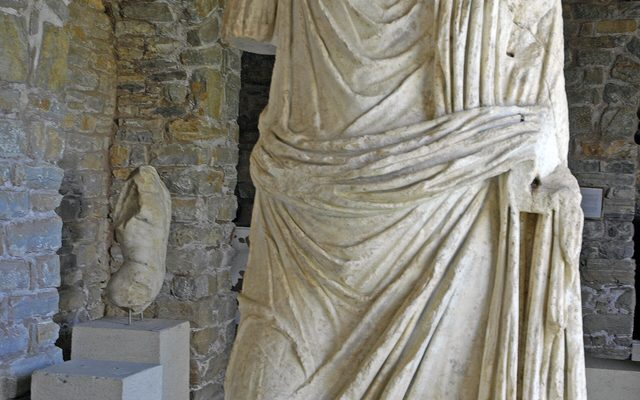
इआसोस मछली बाज़ार संग्रहालय (मिलास)मुग़ला · संग्रहालय मिलेटस संग्रहालयआयदिन · संग्रहालय
मिलेटस संग्रहालयआयदिन · संग्रहालय मिलेटस पुरातात्विक स्थलआयदिन · पुरातात्विक स्थल
मिलेटस पुरातात्विक स्थलआयदिन · पुरातात्विक स्थल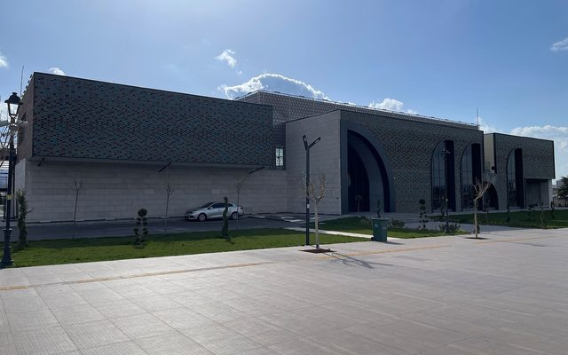
मिमार सिनान और नगर संग्रहालयकायसेरी · संग्रहालय मिनियातुर्कइस्तांबुल · संग्रहालय
मिनियातुर्कइस्तांबुल · संग्रहालय मिसिस (मोप्सुएस्तिया)अदाना · पुरातात्विक स्थल
मिसिस (मोप्सुएस्तिया)अदाना · पुरातात्विक स्थल मिसिस मोज़ेक संग्रहालयअदाना · संग्रहालय
मिसिस मोज़ेक संग्रहालयअदाना · संग्रहालय एमकेई उद्योग और प्रौद्योगिकी संग्रहालयअंकारा · संग्रहालय
एमकेई उद्योग और प्रौद्योगिकी संग्रहालयअंकारा · संग्रहालय मोर गेब्रियल मठमार्दिन · धार्मिक इमारतएमटीए शेहवार प्राकृतिक इतिहास संग्रहालयअंकारा · संग्रहालयमुजुर भूमिगत नगरकिरशेहिर · भूमिगत नगर
मोर गेब्रियल मठमार्दिन · धार्मिक इमारतएमटीए शेहवार प्राकृतिक इतिहास संग्रहालयअंकारा · संग्रहालयमुजुर भूमिगत नगरकिरशेहिर · भूमिगत नगर मुदान्या युद्धविराम गृह संग्रहालयबुर्सा · संग्रहालय
मुदान्या युद्धविराम गृह संग्रहालयबुर्सा · संग्रहालय मुरादिये परिसरबुर्सा · धार्मिक इमारत
मुरादिये परिसरबुर्सा · धार्मिक इमारत मुरादिये जलप्रपातवान · जलप्रपात
मुरादिये जलप्रपातवान · जलप्रपात मुस्तफ़ापाशा (सिनासोस)नेवशेहिर · क़िला और ऐतिहासिक इमारत
मुस्तफ़ापाशा (सिनासोस)नेवशेहिर · क़िला और ऐतिहासिक इमारत बोद्रुम मौसोलियम स्मारक संग्रहालयमुग़ला · संग्रहालय
बोद्रुम मौसोलियम स्मारक संग्रहालयमुग़ला · संग्रहालय क्नीडोस पुरातात्विक स्थलमुग़ला · पुरातात्विक स्थल
क्नीडोस पुरातात्विक स्थलमुग़ला · पुरातात्विक स्थल मुग्ला संग्रहालयमुग़ला · संग्रहालयमुश संग्रहालयमुश · संग्रहालय
मुग्ला संग्रहालयमुग़ला · संग्रहालयमुश संग्रहालयमुश · संग्रहालय मिंदोस प्राचीन नगरमुग़ला · पुरातात्विक स्थल
मिंदोस प्राचीन नगरमुग़ला · पुरातात्विक स्थल मायरा पुरातात्विक स्थलअंताल्या · पुरातात्विक स्थल
मायरा पुरातात्विक स्थलअंताल्या · पुरातात्विक स्थल म्यूस प्राचीन नगरआयदिन · पुरातात्विक स्थल
म्यूस प्राचीन नगरआयदिन · पुरातात्विक स्थल म्यूज़े गैसख़ानाइस्तांबुल · संग्रहालय
म्यूज़े गैसख़ानाइस्तांबुल · संग्रहालय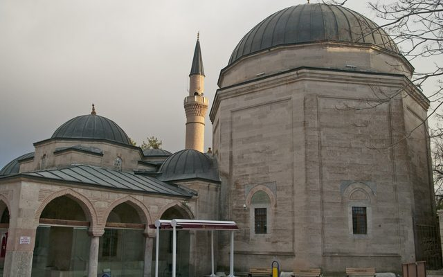
नाकोलेया और सेयितगाज़ी परिसरएस्कीशेहिर · धार्मिक इमारत नमाज़गाह तोपख़ाना संग्रहालयचानाक्काले · संग्रहालय
नमाज़गाह तोपख़ाना संग्रहालयचानाक्काले · संग्रहालय नामरुन क़िलामेर्सिन · क़िला और ऐतिहासिक इमारतनामिक कमाल गृह संग्रहालयतेकिरदाग · संग्रहालय
नामरुन क़िलामेर्सिन · क़िला और ऐतिहासिक इमारतनामिक कमाल गृह संग्रहालयतेकिरदाग · संग्रहालय नामिक केमाल कालकोठरी और संग्रहालयग़ाज़ीमागुसा (फ़ामागुस्ता) · संग्रहालयनियांड्रियाचानाक्काले · पुरातात्विक स्थल
नामिक केमाल कालकोठरी और संग्रहालयग़ाज़ीमागुसा (फ़ामागुस्ता) · संग्रहालयनियांड्रियाचानाक्काले · पुरातात्विक स्थल नेजमी इगे गृह नृवंशविज्ञान संग्रहालयएदिर्ने · संग्रहालय
नेजमी इगे गृह नृवंशविज्ञान संग्रहालयएदिर्ने · संग्रहालय नेमरुत क्रेटर झीलबितलिस · झीलहाजीबेक्ताश पुरातत्व एवं नृवंशविज्ञान संग्रहालयनेवशेहिर · संग्रहालयहाजीबेक्ताश अतातुर्क गृह संग्रहालयनेवशेहिर · संग्रहालय
नेमरुत क्रेटर झीलबितलिस · झीलहाजीबेक्ताश पुरातत्व एवं नृवंशविज्ञान संग्रहालयनेवशेहिर · संग्रहालयहाजीबेक्ताश अतातुर्क गृह संग्रहालयनेवशेहिर · संग्रहालय नेवशेहिर संग्रहालयनेवशेहिर · संग्रहालयनिल्युफ़र हातून इमारेत (तुर्क-इस्लामी कला संग्रहालय)बुर्सा · संग्रहालयनिग्दे आंदावाल पुरातात्विक स्थलनिगदे · पुरातात्विक स्थल
नेवशेहिर संग्रहालयनेवशेहिर · संग्रहालयनिल्युफ़र हातून इमारेत (तुर्क-इस्लामी कला संग्रहालय)बुर्सा · संग्रहालयनिग्दे आंदावाल पुरातात्विक स्थलनिगदे · पुरातात्विक स्थल निग्दे संग्रहालयनिगदे · संग्रहालय
निग्दे संग्रहालयनिगदे · संग्रहालय नोतियोन प्राचीन नगरइज़मिर · पुरातात्विक स्थल
नोतियोन प्राचीन नगरइज़मिर · पुरातात्विक स्थल निम्फ़ायोन (निफ़) महलइज़मिर · क़िला और ऐतिहासिक इमारत
निम्फ़ायोन (निफ़) महलइज़मिर · क़िला और ऐतिहासिक इमारत निसा पुरातात्विक स्थल (सुल्तानहिसार)आयदिन · पुरातात्विक स्थल
निसा पुरातात्विक स्थल (सुल्तानहिसार)आयदिन · पुरातात्विक स्थल ओडीटीयू विज्ञान और प्रौद्योगिकी संग्रहालयअंकारा · संग्रहालय
ओडीटीयू विज्ञान और प्रौद्योगिकी संग्रहालयअंकारा · संग्रहालय ओदुनपाज़ारी मॉडर्न संग्रहालयएस्कीशेहिर · संग्रहालय
ओदुनपाज़ारी मॉडर्न संग्रहालयएस्कीशेहिर · संग्रहालय ओइनोआंदा प्राचीन नगरमुग़ला · पुरातात्विक स्थल
ओइनोआंदा प्राचीन नगरमुग़ला · पुरातात्विक स्थल ओल्बा प्राचीन नगरमेर्सिन · पुरातात्विक स्थल
ओल्बा प्राचीन नगरमेर्सिन · पुरातात्विक स्थल ओलुज़ होयुकअमास्या · पुरातात्विक स्थल
ओलुज़ होयुकअमास्या · पुरातात्विक स्थल ओलिंपोस पुरातात्विक स्थलअंताल्या · पुरातात्विक स्थल
ओलिंपोस पुरातात्विक स्थलअंताल्या · पुरातात्विक स्थल दस-आँख पुल (दिजला पुल)दियारबाकिर · क़िला और ऐतिहासिक इमारतओर्दू संग्रहालयओर्दु · संग्रहालय
दस-आँख पुल (दिजला पुल)दियारबाकिर · क़िला और ऐतिहासिक इमारतओर्दू संग्रहालयओर्दु · संग्रहालय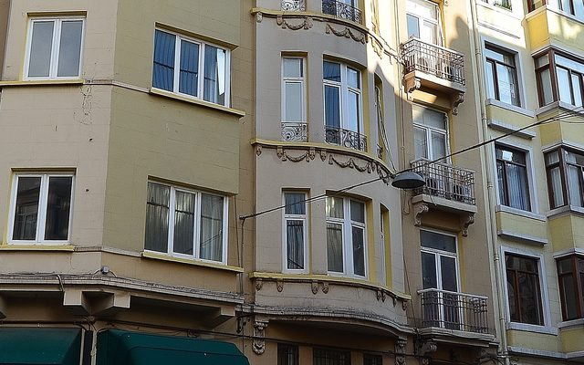
ओरहान केमाल संग्रहालयइस्तांबुल · संग्रहालय उस्मान हम्दी बे संग्रहालयकोजाएली · संग्रहालयओस्मानिये संग्रहालयओस्मानिये · संग्रहालयउस्मानी घर संग्रहालयबुर्सा · संग्रहालय
उस्मान हम्दी बे संग्रहालयकोजाएली · संग्रहालयओस्मानिये संग्रहालयओस्मानिये · संग्रहालयउस्मानी घर संग्रहालयबुर्सा · संग्रहालय ओथेलो किलाग़ाज़ीमागुसा (फ़ामागुस्ता) · क़िला और ऐतिहासिक इमारत
ओथेलो किलाग़ाज़ीमागुसा (फ़ामागुस्ता) · क़िला और ऐतिहासिक इमारत ओयलुम होयुककिलिस · पुरातात्विक स्थल
ओयलुम होयुककिलिस · पुरातात्विक स्थल पालानदोकेन स्की रिज़ॉर्टएर्ज़ुरुम · स्की रिज़ॉर्ट
पालानदोकेन स्की रिज़ॉर्टएर्ज़ुरुम · स्की रिज़ॉर्ट पैनोरमा 1453 इतिहास संग्रहालयइस्तांबुल · संग्रहालय
पैनोरमा 1453 इतिहास संग्रहालयइस्तांबुल · संग्रहालय पारियोन प्राचीन नगरचानाक्काले · पुरातात्विक स्थल
पारियोन प्राचीन नगरचानाक्काले · पुरातात्विक स्थल पातारा पुरातात्विक स्थलअंताल्या · पुरातात्विक स्थल
पातारा पुरातात्विक स्थलअंताल्या · पुरातात्विक स्थल पेदासा प्राचीन नगरमुग़ला · पुरातात्विक स्थलपेदनेलिस्सोसअंताल्या · पुरातात्विक स्थल
पेदासा प्राचीन नगरमुग़ला · पुरातात्विक स्थलपेदनेलिस्सोसअंताल्या · पुरातात्विक स्थल पेरा संग्रहालयइस्तांबुल · संग्रहालय
पेरा संग्रहालयइस्तांबुल · संग्रहालय पेर्गे पुरातात्विक स्थलअंताल्या · पुरातात्विक स्थलपेरपेरेनेबालिकेसिर · पुरातात्विक स्थल
पेर्गे पुरातात्विक स्थलअंताल्या · पुरातात्विक स्थलपेरपेरेनेबालिकेसिर · पुरातात्विक स्थल पेर्रे पुरातात्विक स्थलआदियामान · पुरातात्विक स्थल
पेर्रे पुरातात्विक स्थलआदियामान · पुरातात्विक स्थल पेसिनस पुरातात्विक स्थलएस्कीशेहिर · पुरातात्विक स्थल
पेसिनस पुरातात्विक स्थलएस्कीशेहिर · पुरातात्विक स्थल फ़ासेलिस पुरातात्विक स्थलअंताल्या · पुरातात्विक स्थल
फ़ासेलिस पुरातात्विक स्थलअंताल्या · पुरातात्विक स्थल फ़ेल्लोस प्राचीन नगरअंताल्या · पुरातात्विक स्थल
फ़ेल्लोस प्राचीन नगरअंताल्या · पुरातात्विक स्थल फ़ोकाया (फ़ोचा)इज़मिर · पुरातात्विक स्थल
फ़ोकाया (फ़ोचा)इज़मिर · पुरातात्विक स्थल पियरे लोती संग्रहालयइस्तांबुल · संग्रहालय
पियरे लोती संग्रहालयइस्तांबुल · संग्रहालय पिसिदिया का अंतिओखियाइस्पार्ता · पुरातात्विक स्थलपोम्पेयोपोलिस प्राचीन नगर (पैफ़्लागोनिया)कस्तामोनु · पुरातात्विक स्थल
पिसिदिया का अंतिओखियाइस्पार्ता · पुरातात्विक स्थलपोम्पेयोपोलिस प्राचीन नगर (पैफ़्लागोनिया)कस्तामोनु · पुरातात्विक स्थल प्रीएने पुरातात्विक स्थलआयदिन · पुरातात्विक स्थल
प्रीएने पुरातात्विक स्थलआयदिन · पुरातात्विक स्थल प्रुसियास आद हिपियुम (कोनुराल्प)द्यूज़जे · पुरातात्विक स्थल
प्रुसियास आद हिपियुम (कोनुराल्प)द्यूज़जे · पुरातात्विक स्थल पिदनाईमुग़ला · पुरातात्विक स्थल
पिदनाईमुग़ला · पुरातात्विक स्थल रहमी एम. कोच संग्रहालयइस्तांबुल · संग्रहालय
रहमी एम. कोच संग्रहालयइस्तांबुल · संग्रहालय रामी बैरक (रामी पुस्तकालय)इस्तांबुल · क़िला और ऐतिहासिक इमारत
रामी बैरक (रामी पुस्तकालय)इस्तांबुल · क़िला और ऐतिहासिक इमारत चित्रकला और मूर्तिकला संग्रहालयअंकारा · संग्रहालय
चित्रकला और मूर्तिकला संग्रहालयअंकारा · संग्रहालय रेज़ान हास संग्रहालयइस्तांबुल · संग्रहालय
रेज़ान हास संग्रहालयइस्तांबुल · संग्रहालय रोदियापोलिस प्राचीन नगरअंताल्या · पुरातात्विक स्थल
रोदियापोलिस प्राचीन नगरअंताल्या · पुरातात्विक स्थल रीज़े अतातुर्क गृह संग्रहालयरिज़े · संग्रहालय
रीज़े अतातुर्क गृह संग्रहालयरिज़े · संग्रहालय रीज़े संग्रहालयरिज़े · संग्रहालय
रीज़े संग्रहालयरिज़े · संग्रहालय अंकारा रोमन स्नानागारअंकारा · पुरातात्विक स्थल
अंकारा रोमन स्नानागारअंकारा · पुरातात्विक स्थल रुमेली हिसारीइस्तांबुल · क़िला और ऐतिहासिक इमारत
रुमेली हिसारीइस्तांबुल · क़िला और ऐतिहासिक इमारत रुमकाले पुरातात्विक स्थलगाज़ियांतेप · पुरातात्विक स्थल
रुमकाले पुरातात्विक स्थलगाज़ियांतेप · पुरातात्विक स्थल रुस्तम पाशा मस्जिदइस्तांबुल · धार्मिक इमारत
रुस्तम पाशा मस्जिदइस्तांबुल · धार्मिक इमारत सादबेर्क हानिम संग्रहालयइस्तांबुल · संग्रहालय
सादबेर्क हानिम संग्रहालयइस्तांबुल · संग्रहालय सागालासोस पुरातात्विक स्थलबुर्दुर · पुरातात्विक स्थल
सागालासोस पुरातात्विक स्थलबुर्दुर · पुरातात्विक स्थल साहबिये मदरसाकायसेरी · धार्मिक इमारत
साहबिये मदरसाकायसेरी · धार्मिक इमारत सैत फ़ाइक अबासियानिक संग्रहालयइस्तांबुल · संग्रहालय
सैत फ़ाइक अबासियानिक संग्रहालयइस्तांबुल · संग्रहालय सकार्या संग्रहालयसाकार्या · संग्रहालय
सकार्या संग्रहालयसाकार्या · संग्रहालय साक्लीकेंट घाटीमुग़ला · घाटी (कैन्यन)
साक्लीकेंट घाटीमुग़ला · घाटी (कैन्यन) साकिप सबांजी मार्दिन नगर संग्रहालयमार्दिन · संग्रहालय
साकिप सबांजी मार्दिन नगर संग्रहालयमार्दिन · संग्रहालय साकिप सबांजी संग्रहालयइस्तांबुल · संग्रहालय
साकिप सबांजी संग्रहालयइस्तांबुल · संग्रहालय सालामिस पुरातात्विक स्थलग़ाज़ीमागुसा (फ़ामागुस्ता) · पुरातात्विक स्थल
सालामिस पुरातात्विक स्थलग़ाज़ीमागुसा (फ़ामागुस्ता) · पुरातात्विक स्थल साल्दा झीलबुर्दुर · झील
साल्दा झीलबुर्दुर · झील साल्ट गलाताइस्तांबुल · संग्रहालय
साल्ट गलाताइस्तांबुल · संग्रहालय सामसुन संग्रहालयसामसुन · संग्रहालय
सामसुन संग्रहालयसामसुन · संग्रहालय सपांजा झीलसाकार्या · झील
सपांजा झीलसाकार्या · झील सारातली किर्कग्योज़ भूमिगत नगरअक्साराय · भूमिगत नगर
सारातली किर्कग्योज़ भूमिगत नगरअक्साराय · भूमिगत नगर सार्डिस पुरातात्विक स्थलमानीसा · पुरातात्विक स्थल
सार्डिस पुरातात्विक स्थलमानीसा · पुरातात्विक स्थल सारिस्सा (कुशाकली)सिवास · पुरातात्विक स्थल
सारिस्सा (कुशाकली)सिवास · पुरातात्विक स्थल सारीहाननेवशेहिर · क़िला और ऐतिहासिक इमारत
सारीहाननेवशेहिर · क़िला और ऐतिहासिक इमारत सारिकामिश स्की रिज़ॉर्टकार्स · स्की रिज़ॉर्ट
सारिकामिश स्की रिज़ॉर्टकार्स · स्की रिज़ॉर्ट सारीकाया रोमन स्नानागारयोज़गात · पुरातात्विक स्थल
सारीकाया रोमन स्नानागारयोज़गात · पुरातात्विक स्थल सतालाग्युम्युशहाने · पुरातात्विक स्थलसेबास्तोपोलिसतोकात · पुरातात्विक स्थल
सतालाग्युम्युशहाने · पुरातात्विक स्थलसेबास्तोपोलिसतोकात · पुरातात्विक स्थल सेबेदाअंताल्या · पुरातात्विक स्थल
सेबेदाअंताल्या · पुरातात्विक स्थल सेदिर द्वीप (केद्रेआई)मुग़ला · पुरातात्विक स्थल
सेदिर द्वीप (केद्रेआई)मुग़ला · पुरातात्विक स्थल सेका काग़ज़ संग्रहालयकोजाएली · संग्रहालय
सेका काग़ज़ संग्रहालयकोजाएली · संग्रहालय सेल्यूकिया (पैम्फ़ीलिया) प्राचीन नगरअंताल्या · पुरातात्विक स्थल
सेल्यूकिया (पैम्फ़ीलिया) प्राचीन नगरअंताल्या · पुरातात्विक स्थल सेल्गे प्राचीन नगरअंताल्या · पुरातात्विक स्थल
सेल्गे प्राचीन नगरअंताल्या · पुरातात्विक स्थल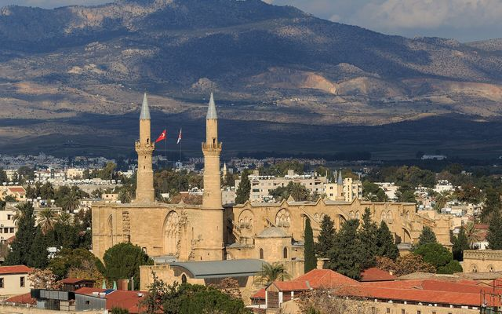
सेलिमिये मस्जिदलेफ़कोशा (निकोसिया) · धार्मिक इमारत सेलिनुस प्राचीन नगरअंताल्या · पुरातात्विक स्थल
सेलिनुस प्राचीन नगरअंताल्या · पुरातात्विक स्थल साइड संग्रहालयअंताल्या · संग्रहालय
साइड संग्रहालयअंताल्या · संग्रहालय साइड पुरातात्विक स्थलअंताल्या · पुरातात्विक स्थल
साइड पुरातात्विक स्थलअंताल्या · पुरातात्विक स्थल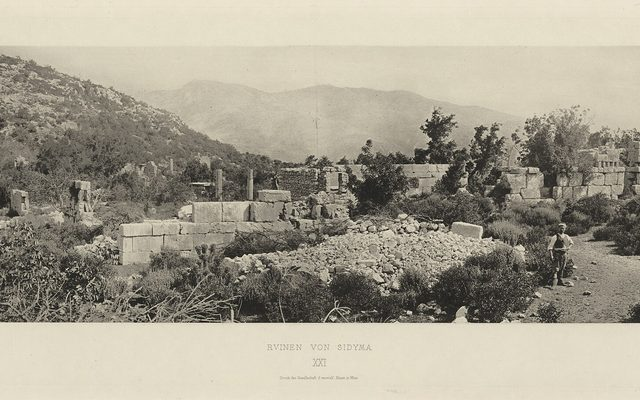
सिदिमा प्राचीन नगरमुग़ला · पुरातात्विक स्थल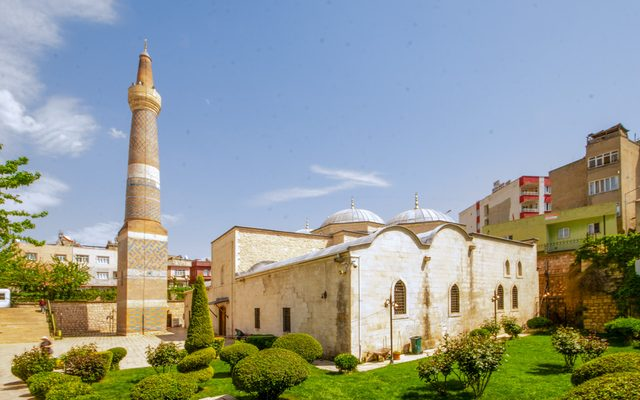
सिइर्त की महान मस्जिदसिइर्त · धार्मिक इमारत सिलिफ़्के अस्तिम गुफामेर्सिन · प्राकृतिक स्थल
सिलिफ़्के अस्तिम गुफामेर्सिन · प्राकृतिक स्थल सिलिफ़्के अतातुर्क गृह और नृवंशविज्ञान संग्रहालयमेर्सिन · संग्रहालय
सिलिफ़्के अतातुर्क गृह और नृवंशविज्ञान संग्रहालयमेर्सिन · संग्रहालय सिलिफ़्के आयातेक्ला पुरातात्विक स्थलमेर्सिन · पुरातात्विक स्थल
सिलिफ़्के आयातेक्ला पुरातात्विक स्थलमेर्सिन · पुरातात्विक स्थल सिलिफ़्के स्वर्ग और नरक गर्तमेर्सिन · प्राकृतिक स्थल
सिलिफ़्के स्वर्ग और नरक गर्तमेर्सिन · प्राकृतिक स्थल सिलिफ़के किलामेर्सिन · क़िला और ऐतिहासिक इमारत
सिलिफ़के किलामेर्सिन · क़िला और ऐतिहासिक इमारत सिलिफ़्के संग्रहालयमेर्सिन · संग्रहालय
सिलिफ़्के संग्रहालयमेर्सिन · संग्रहालय सिलिफ़्के नारलिकुयु मोज़ेक संग्रहालयमेर्सिन · संग्रहालय
सिलिफ़्के नारलिकुयु मोज़ेक संग्रहालयमेर्सिन · संग्रहालय सिल्ले और संत हेलेना गिरजाघरकोन्या · धार्मिक इमारत
सिल्ले और संत हेलेना गिरजाघरकोन्या · धार्मिक इमारत सिल्लियोन प्राचीन नगरअंताल्या · पुरातात्विक स्थलसिल्वान अतातुर्क गृह संग्रहालयदियारबाकिर · संग्रहालय
सिल्लियोन प्राचीन नगरअंताल्या · पुरातात्विक स्थलसिल्वान अतातुर्क गृह संग्रहालयदियारबाकिर · संग्रहालय सिमेना पुरातात्विक स्थलअंताल्या · पुरातात्विक स्थलसिनोप अर्सलानतोरुनलार नृवंशविज्ञान संग्रहालयसिनोप · संग्रहालय
सिमेना पुरातात्विक स्थलअंताल्या · पुरातात्विक स्थलसिनोप अर्सलानतोरुनलार नृवंशविज्ञान संग्रहालयसिनोप · संग्रहालय सिनोप संग्रहालयसिनोप · संग्रहालय
सिनोप संग्रहालयसिनोप · संग्रहालय सिरकेली होयुकअदाना · पुरातात्विक स्थल
सिरकेली होयुकअदाना · पुरातात्विक स्थल सिवास पुरातत्व संग्रहालयसिवास · संग्रहालय
सिवास पुरातत्व संग्रहालयसिवास · संग्रहालय सिवास अतातुर्क और कांग्रेस संग्रहालयसिवास · संग्रहालय
सिवास अतातुर्क और कांग्रेस संग्रहालयसिवास · संग्रहालय सोबेसोस प्राचीन नगरनेवशेहिर · पुरातात्विक स्थलसोबेसोस पुरातात्विक स्थलनेवशेहिर · पुरातात्विक स्थल
सोबेसोस प्राचीन नगरनेवशेहिर · पुरातात्विक स्थलसोबेसोस पुरातात्विक स्थलनेवशेहिर · पुरातात्विक स्थल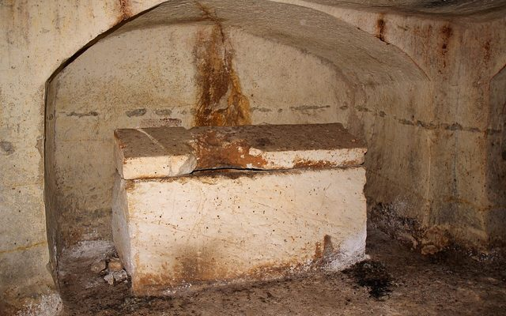
सोफ़राज़ स्मारक मक़बराआदियामान · पुरातात्विक स्थल सोफ़्ता क़िलामेर्सिन · क़िला और ऐतिहासिक इमारत
सोफ़्ता क़िलामेर्सिन · क़िला और ऐतिहासिक इमारत सोली पोम्पेयोपोलिसमेर्सिन · पुरातात्विक स्थल
सोली पोम्पेयोपोलिसमेर्सिन · पुरातात्विक स्थल सोली पुरातात्विक स्थललेफ़्के (लेफ़्का) · पुरातात्विक स्थल
सोली पुरातात्विक स्थललेफ़्के (लेफ़्का) · पुरातात्विक स्थल सोगमातारशानलीउर्फ़ा · पुरातात्विक स्थल
सोगमातारशानलीउर्फ़ा · पुरातात्विक स्थल पादुआ के संत एंटनी का गिरजाघरइस्तांबुल · धार्मिक इमारत
पादुआ के संत एंटनी का गिरजाघरइस्तांबुल · धार्मिक इमारत संत बरनबास मठग़ाज़ीमागुसा (फ़ामागुस्ता) · धार्मिक इमारत
संत बरनबास मठग़ाज़ीमागुसा (फ़ामागुस्ता) · धार्मिक इमारत संत हिलारियन किलागिर्ने (किरेनिया) · क़िला और ऐतिहासिक इमारत
संत हिलारियन किलागिर्ने (किरेनिया) · क़िला और ऐतिहासिक इमारत संत पीटर स्मारक संग्रहालयहताय · संग्रहालय
संत पीटर स्मारक संग्रहालयहताय · संग्रहालय संत सिमियन मठहताय · धार्मिक इमारत
संत सिमियन मठहताय · धार्मिक इमारत स्ट्रातोनिकेइया पुरातात्विक स्थलमुग़ला · पुरातात्विक स्थल
स्ट्रातोनिकेइया पुरातात्विक स्थलमुग़ला · पुरातात्विक स्थल सुल्तान बायज़ीद द्वितीय परिसर स्वास्थ्य संग्रहालयएदिर्ने · संग्रहालय
सुल्तान बायज़ीद द्वितीय परिसर स्वास्थ्य संग्रहालयएदिर्ने · संग्रहालय सुल्तान अहमद मस्जिद (ब्लू मस्जिद)इस्तांबुल · धार्मिक इमारत
सुल्तान अहमद मस्जिद (ब्लू मस्जिद)इस्तांबुल · धार्मिक इमारत सुल्तानअहमत चौक (हिप्पोड्रोम)इस्तांबुल · पुरातात्विक स्थल
सुल्तानअहमत चौक (हिप्पोड्रोम)इस्तांबुल · पुरातात्विक स्थल सुल्तानहानी कारवाँ सरायअक्साराय · क़िला और ऐतिहासिक इमारतसुल्तानों का मार्गएदिर्ने · ट्रेकिंग मार्ग
सुल्तानहानी कारवाँ सरायअक्साराय · क़िला और ऐतिहासिक इमारतसुल्तानों का मार्गएदिर्ने · ट्रेकिंग मार्ग सूरा प्राचीन नगरअंताल्या · पुरातात्विक स्थल
सूरा प्राचीन नगरअंताल्या · पुरातात्विक स्थल सुर्प गिरागोस आर्मेनियाई गिरजाघरदियारबाकिर · धार्मिक इमारत
सुर्प गिरागोस आर्मेनियाई गिरजाघरदियारबाकिर · धार्मिक इमारत सूउचतू जलप्रपातबुर्सा · जलप्रपात
सूउचतू जलप्रपातबुर्सा · जलप्रपात स्योयुत एर्तुग्रुल ग़ाज़ी संग्रहालयबिलेजिक · संग्रहालय
स्योयुत एर्तुग्रुल ग़ाज़ी संग्रहालयबिलेजिक · संग्रहालय सुलेमानिये मस्जिदइस्तांबुल · धार्मिक इमारत
सुलेमानिये मस्जिदइस्तांबुल · धार्मिक इमारत सुमेला मठत्राबज़ोन · धार्मिक इमारततख़्ताकुशलार नृवंशविज्ञान संग्रहालयबालिकेसिर · संग्रहालय
सुमेला मठत्राबज़ोन · धार्मिक इमारततख़्ताकुशलार नृवंशविज्ञान संग्रहालयबालिकेसिर · संग्रहालय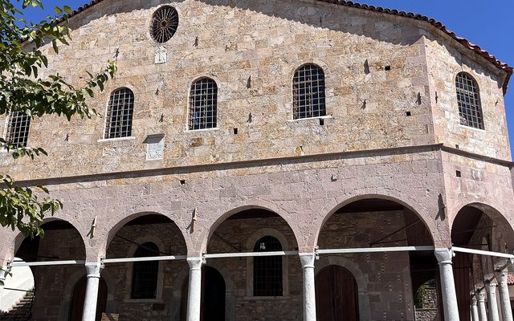
तक्सियार्खिस स्मारक संग्रहालयबालिकेसिर · संग्रहालय तापुरेलीमेर्सिन · पुरातात्विक स्थल
तापुरेलीमेर्सिन · पुरातात्विक स्थल सिनोप ऐतिहासिक कारागारसिनोप · क़िला और ऐतिहासिक इमारत
सिनोप ऐतिहासिक कारागारसिनोप · क़िला और ऐतिहासिक इमारत तारसुस प्राचीन रोमन मार्गमेर्सिन · पुरातात्विक स्थल
तारसुस प्राचीन रोमन मार्गमेर्सिन · पुरातात्विक स्थल तारसुस गोज़लुकुलेमेर्सिन · पुरातात्विक स्थल
तारसुस गोज़लुकुलेमेर्सिन · पुरातात्विक स्थल तारसुस क्लियोपेट्रा द्वार और प्राचीन मार्गमेर्सिन · पुरातात्विक स्थल
तारसुस क्लियोपेट्रा द्वार और प्राचीन मार्गमेर्सिन · पुरातात्विक स्थल तार्सुस संत पॉल स्मारक संग्रहालयमेर्सिन · संग्रहालय
तार्सुस संत पॉल स्मारक संग्रहालयमेर्सिन · संग्रहालय तार्सुस संत पॉल कुआँमेर्सिन · धार्मिक इमारत
तार्सुस संत पॉल कुआँमेर्सिन · धार्मिक इमारत तातलारिन भूमिगत नगरनेवशेहिर · भूमिगत नगरतायफ़ुन तालिपोउलु टाइपराइटर संग्रहालयएस्कीशेहिर · संग्रहालय
तातलारिन भूमिगत नगरनेवशेहिर · भूमिगत नगरतायफ़ुन तालिपोउलु टाइपराइटर संग्रहालयएस्कीशेहिर · संग्रहालय ताज़ी घाटीअंताल्या · घाटी (कैन्यन)
ताज़ी घाटीअंताल्या · घाटी (कैन्यन)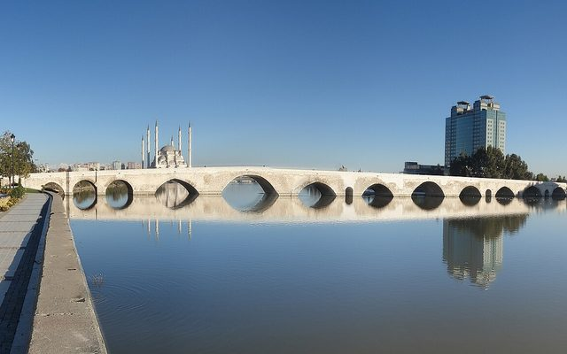
ताशकोप्रु (पत्थर पुल)अदाना · क़िला और ऐतिहासिक इमारत अर्सलान एयजे एम्फ़ोरा संग्रहालयमेर्सिन · संग्रहालय
अर्सलान एयजे एम्फ़ोरा संग्रहालयमेर्सिन · संग्रहालय ताशुजु अतातुर्क भवनमेर्सिन · संग्रहालय
ताशुजु अतातुर्क भवनमेर्सिन · संग्रहालय टीसीडीडी खुला भाप इंजन संग्रहालयअंकारा · संग्रहालय
टीसीडीडी खुला भाप इंजन संग्रहालयअंकारा · संग्रहालय मालिकोय रेलवे स्टेशन संग्रहालयअंकारा · संग्रहालय
मालिकोय रेलवे स्टेशन संग्रहालयअंकारा · संग्रहालय तेइमियुस्सा प्राचीन नगरअंताल्या · पुरातात्विक स्थलतेकिरदाग मुरातली अतातुर्क गृह संग्रहालयतेकिरदाग · संग्रहालय
तेइमियुस्सा प्राचीन नगरअंताल्या · पुरातात्विक स्थलतेकिरदाग मुरातली अतातुर्क गृह संग्रहालयतेकिरदाग · संग्रहालय तेकिरदाग संग्रहालयतेकिरदाग · संग्रहालय
तेकिरदाग संग्रहालयतेकिरदाग · संग्रहालय तेक्केकोय गुफाएँसामसुन · पुरातात्विक स्थल
तेक्केकोय गुफाएँसामसुन · पुरातात्विक स्थल तेओस पुरातात्विक स्थलइज़मिर · पुरातात्विक स्थल
तेओस पुरातात्विक स्थलइज़मिर · पुरातात्विक स्थल तेर्मेसोस पुरातात्विक स्थलअंताल्या · पुरातात्विक स्थल
तेर्मेसोस पुरातात्विक स्थलअंताल्या · पुरातात्विक स्थल थियोडोसियस फ़ोरमइस्तांबुल · पुरातात्विक स्थल
थियोडोसियस फ़ोरमइस्तांबुल · पुरातात्विक स्थल थियोडोसियस की दीवारेंइस्तांबुल · क़िला और ऐतिहासिक इमारततिलबाशार क़िलागाज़ियांतेप · क़िला और ऐतिहासिक इमारत
थियोडोसियस की दीवारेंइस्तांबुल · क़िला और ऐतिहासिक इमारततिलबाशार क़िलागाज़ियांतेप · क़िला और ऐतिहासिक इमारत तिलमेन होयुकगाज़ियांतेप · पुरातात्विक स्थल
तिलमेन होयुकगाज़ियांतेप · पुरातात्विक स्थल तिरे संग्रहालयइज़मिर · संग्रहालय
तिरे संग्रहालयइज़मिर · संग्रहालय टाइटस सुरंग (वेस्पासियन सुरंग)हताय · पुरातात्विक स्थल
टाइटस सुरंग (वेस्पासियन सुरंग)हताय · पुरातात्विक स्थल तोफ़ाश अनातोलियाई गाड़ियाँ संग्रहालयबुर्सा · संग्रहालयतोकात अतातुर्क गृह और नृवंशविज्ञान संग्रहालयतोकात · संग्रहालय
तोफ़ाश अनातोलियाई गाड़ियाँ संग्रहालयबुर्सा · संग्रहालयतोकात अतातुर्क गृह और नृवंशविज्ञान संग्रहालयतोकात · संग्रहालय तोकात संग्रहालयतोकात · संग्रहालय
तोकात संग्रहालयतोकात · संग्रहालय तोकात ताशहान (वोयवोदा हान)तोकात · क़िला और ऐतिहासिक इमारत
तोकात ताशहान (वोयवोदा हान)तोकात · क़िला और ऐतिहासिक इमारत तोपकापी महलइस्तांबुल · क़िला और ऐतिहासिक इमारत
तोपकापी महलइस्तांबुल · क़िला और ऐतिहासिक इमारत तोर्तुम जलप्रपातएर्ज़ुरुम · जलप्रपात
तोर्तुम जलप्रपातएर्ज़ुरुम · जलप्रपात त्राबज़ोन अतातुर्क मंडपत्राबज़ोन · संग्रहालय
त्राबज़ोन अतातुर्क मंडपत्राबज़ोन · संग्रहालय त्राबज़ोन हागिया सोफ़ियात्राबज़ोन · धार्मिक इमारत
त्राबज़ोन हागिया सोफ़ियात्राबज़ोन · धार्मिक इमारत त्राबज़ोन संग्रहालय (कोस्ताकी हवेली)त्राबज़ोन · संग्रहालय
त्राबज़ोन संग्रहालय (कोस्ताकी हवेली)त्राबज़ोन · संग्रहालय त्राल्लेइस प्राचीन नगरआयदिन · पुरातात्विक स्थल
त्राल्लेइस प्राचीन नगरआयदिन · पुरातात्विक स्थल त्रेबेन्नाअंताल्या · पुरातात्विक स्थल
त्रेबेन्नाअंताल्या · पुरातात्विक स्थल त्रॉय संग्रहालयचानाक्काले · संग्रहालय
त्रॉय संग्रहालयचानाक्काले · संग्रहालय त्रिसाअंताल्या · पुरातात्विक स्थल
त्रिसाअंताल्या · पुरातात्विक स्थल तुंजेली संग्रहालयतुंजेली · संग्रहालय
तुंजेली संग्रहालयतुंजेली · संग्रहालय तुज़ झील (नमक झील)अक्साराय · झील
तुज़ झील (नमक झील)अक्साराय · झील त्याना और केमेरहिसार रोमन कुंडनिगदे · पुरातात्विक स्थल
त्याना और केमेरहिसार रोमन कुंडनिगदे · पुरातात्विक स्थल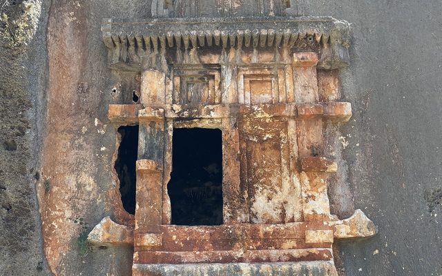
तिबेरिस्सोसअंताल्या · पुरातात्विक स्थल तुर्की वैमानिकी संघ संग्रहालयअंकारा · संग्रहालय
तुर्की वैमानिकी संघ संग्रहालयअंकारा · संग्रहालय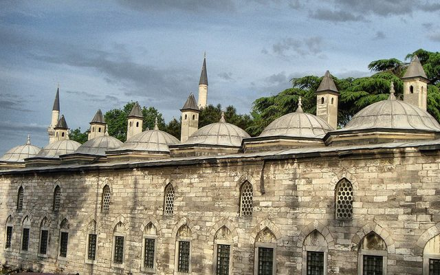
तुर्की वक़्फ़ सुलेखन संग्रहालयइस्तांबुल · संग्रहालय तुर्क और इस्लामी कला संग्रहालयइस्तांबुल · संग्रहालयएदिर्ने तुर्क-इस्लामी कला संग्रहालयएदिर्ने · संग्रहालय
तुर्क और इस्लामी कला संग्रहालयइस्तांबुल · संग्रहालयएदिर्ने तुर्क-इस्लामी कला संग्रहालयएदिर्ने · संग्रहालय तुर्क-इस्लामी कला और नृवंशविज्ञान संग्रहालयएर्ज़ुरुम · संग्रहालय
तुर्क-इस्लामी कला और नृवंशविज्ञान संग्रहालयएर्ज़ुरुम · संग्रहालय तुर्किये इश बैंक संग्रहालयइस्तांबुल · संग्रहालय
तुर्किये इश बैंक संग्रहालयइस्तांबुल · संग्रहालय उलुबे घाटी प्रकृति उद्यानउशाक · घाटी (कैन्यन)उलुबोर्लु संग्रहालयइस्पार्ता · संग्रहालय
उलुबे घाटी प्रकृति उद्यानउशाक · घाटी (कैन्यन)उलुबोर्लु संग्रहालयइस्पार्ता · संग्रहालय उलुजानलार कारागार संग्रहालयअंकारा · संग्रहालय
उलुजानलार कारागार संग्रहालयअंकारा · संग्रहालय उलुदाग स्की रिज़ॉर्टबुर्सा · स्की रिज़ॉर्ट
उलुदाग स्की रिज़ॉर्टबुर्सा · स्की रिज़ॉर्ट उज़ुनजाबुर्च पुरातात्विक स्थलमेर्सिन · पुरातात्विक स्थल
उज़ुनजाबुर्च पुरातात्विक स्थलमेर्सिन · पुरातात्विक स्थल उज़ुनगोलत्राबज़ोन · झील
उज़ुनगोलत्राबज़ोन · झील उशाक संग्रहालयउशाक · संग्रहालय
उशाक संग्रहालयउशाक · संग्रहालय वाला घाटीकस्तामोनु · घाटी (कैन्यन)
वाला घाटीकस्तामोनु · घाटी (कैन्यन) वान झीलवान · झील
वान झीलवान · झील वान किलावान · क़िला और ऐतिहासिक इमारत
वान किलावान · क़िला और ऐतिहासिक इमारत वान संग्रहालयवान · संग्रहालय
वान संग्रहालयवान · संग्रहालय वार्दा पुलअदाना · क़िला और ऐतिहासिक इमारतवीज़े हागिया सोफ़िया (ग़ाज़ी सुलेमान पाशा मस्जिद)किर्कलारेली · धार्मिक इमारत
वार्दा पुलअदाना · क़िला और ऐतिहासिक इमारतवीज़े हागिया सोफ़िया (ग़ाज़ी सुलेमान पाशा मस्जिद)किर्कलारेली · धार्मिक इमारत वूनी महललेफ़्के (लेफ़्का) · पुरातात्विक स्थल
वूनी महललेफ़्के (लेफ़्का) · पुरातात्विक स्थल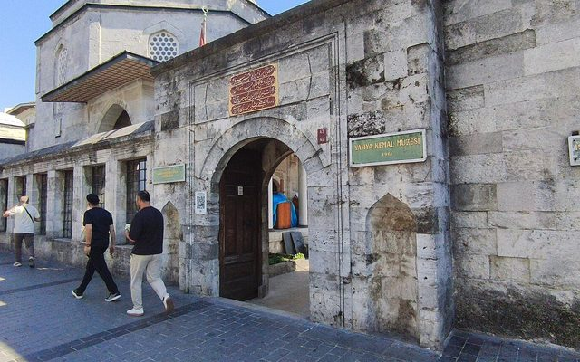
याह्या कमाल संग्रहालयइस्तांबुल · संग्रहालय यालवाच संग्रहालयइस्पार्ता · संग्रहालय
यालवाच संग्रहालयइस्पार्ता · संग्रहालय यानारताश (काइमेरा)अंताल्या · प्राकृतिक स्थल
यानारताश (काइमेरा)अंताल्या · प्राकृतिक स्थल यानिकहानमेर्सिन · पुरातात्विक स्थल
यानिकहानमेर्सिन · पुरातात्विक स्थल येदिगोल्लेर राष्ट्रीय उद्यानबोलू · झील
येदिगोल्लेर राष्ट्रीय उद्यानबोलू · झील येदिकुले किलाइस्तांबुल · क़िला और ऐतिहासिक इमारत
येदिकुले किलाइस्तांबुल · क़िला और ऐतिहासिक इमारत येनीशेहिर शेमाकी गृह संग्रहालयबुर्सा · संग्रहालय
येनीशेहिर शेमाकी गृह संग्रहालयबुर्सा · संग्रहालय बेसिलिका सिस्टर्न (येरेबातान)इस्तांबुल · क़िला और ऐतिहासिक इमारत
बेसिलिका सिस्टर्न (येरेबातान)इस्तांबुल · क़िला और ऐतिहासिक इमारत येसेमेक पुरातात्विक स्थलगाज़ियांतेप · पुरातात्विक स्थल
येसेमेक पुरातात्विक स्थलगाज़ियांतेप · पुरातात्विक स्थल येशिलहिसार सोआनली घाटीकायसेरी · पुरातात्विक स्थल
येशिलहिसार सोआनली घाटीकायसेरी · पुरातात्विक स्थल येशिलोवा होयुकइज़मिर · पुरातात्विक स्थल
येशिलोवा होयुकइज़मिर · पुरातात्विक स्थल यिवली मीनार मस्जिदअंताल्या · धार्मिक इमारत
यिवली मीनार मस्जिदअंताल्या · धार्मिक इमारत योज़गात संग्रहालययोज़गात · संग्रहालय
योज़गात संग्रहालययोज़गात · संग्रहालय युमुकतेपे टीलामेर्सिन · पुरातात्विक स्थल
युमुकतेपे टीलामेर्सिन · पुरातात्विक स्थल युरुक अली एफ़े गृह संग्रहालयआयदिन · संग्रहालय
युरुक अली एफ़े गृह संग्रहालयआयदिन · संग्रहालय योरुक गाँवकाराब्युक · क़िला और ऐतिहासिक इमारत
योरुक गाँवकाराब्युक · क़िला और ऐतिहासिक इमारत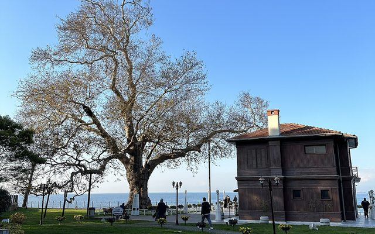
यालोवा का 'चलता हुआ मंडप'यालोवा · संग्रहालय यिलानकाले (सर्प किला)अदाना · क़िला और ऐतिहासिक इमारत
यिलानकाले (सर्प किला)अदाना · क़िला और ऐतिहासिक इमारत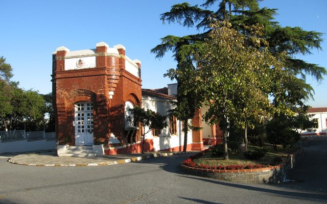
यिल्दिज़ पोर्सिलेन कारख़ानाइस्तांबुल · संग्रहालय यिल्दिज़ महलइस्तांबुल · क़िला और ऐतिहासिक इमारत
यिल्दिज़ महलइस्तांबुल · क़िला और ऐतिहासिक इमारत यिलमाज़ ब्युकेरशेन मोम संग्रहालयएस्कीशेहिर · संग्रहालय
यिलमाज़ ब्युकेरशेन मोम संग्रहालयएस्कीशेहिर · संग्रहालय विजय संग्रहालयअफ़्योनकाराहिसार · संग्रहालय
विजय संग्रहालयअफ़्योनकाराहिसार · संग्रहालय ज़मान्ती नदीअदाना · राफ़्टिंग
ज़मान्ती नदीअदाना · राफ़्टिंग ज़ाज़ादिन सरायकोन्या · क़िला और ऐतिहासिक इमारत
ज़ाज़ादिन सरायकोन्या · क़िला और ऐतिहासिक इमारत ज़ेकी म्युरेन कला संग्रहालयमुग़ला · संग्रहालय
ज़ेकी म्युरेन कला संग्रहालयमुग़ला · संग्रहालय ज़ेंगिबार क़िला (इसौरा)कोन्या · पुरातात्विक स्थल
ज़ेंगिबार क़िला (इसौरा)कोन्या · पुरातात्विक स्थल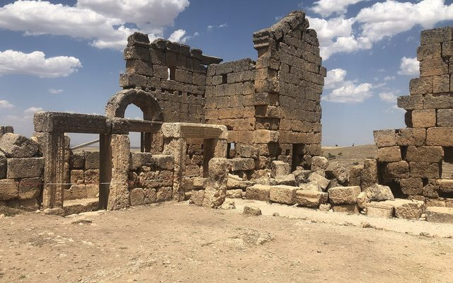
ज़ेरज़ेवान किलादियारबाकिर · पुरातात्विक स्थल ज़्यूग्मा मोज़ेक संग्रहालयगाज़ियांतेप · संग्रहालय
ज़्यूग्मा मोज़ेक संग्रहालयगाज़ियांतेप · संग्रहालय ज़्यूग्मा पुरातात्विक स्थलगाज़ियांतेप · पुरातात्विक स्थल
ज़्यूग्मा पुरातात्विक स्थलगाज़ियांतेप · पुरातात्विक स्थल ज़िलकालेरिज़े · क़िला और ऐतिहासिक इमारत
ज़िलकालेरिज़े · क़िला और ऐतिहासिक इमारत ज़िंजीरिये (सिंजारिये) मदरसादियारबाकिर · धार्मिक इमारत
ज़िंजीरिये (सिंजारिये) मदरसादियारबाकिर · धार्मिक इमारत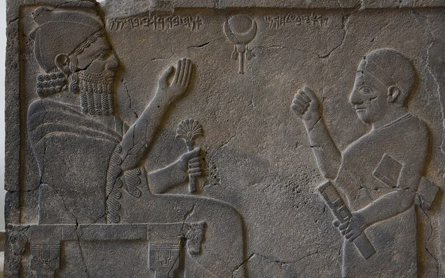
ज़िनसिरली होयुक (समअल)गाज़ियांतेप · पुरातात्विक स्थल ज़िया ग्योकाल्प संग्रहालयदियारबाकिर · संग्रहालय
ज़िया ग्योकाल्प संग्रहालयदियारबाकिर · संग्रहालय सांत्रालइस्तांबुल ऊर्जा संग्रहालयइस्तांबुल · संग्रहालय
सांत्रालइस्तांबुल ऊर्जा संग्रहालयइस्तांबुल · संग्रहालय चामलिक भाप इंजन संग्रहालयइज़मिर · संग्रहालय
चामलिक भाप इंजन संग्रहालयइज़मिर · संग्रहालय चानाक्काले नौसेना संग्रहालयचानाक्काले · संग्रहालयचानाक्काले गाथा परिचय केंद्रचानाक्काले · संग्रहालयचानाक्काले हिलाल-ए अहमर पुनर्रचना क्षेत्रचानाक्काले · संग्रहालय
चानाक्काले नौसेना संग्रहालयचानाक्काले · संग्रहालयचानाक्काले गाथा परिचय केंद्रचानाक्काले · संग्रहालयचानाक्काले हिलाल-ए अहमर पुनर्रचना क्षेत्रचानाक्काले · संग्रहालय चांकिरी संग्रहालयचांकिरी · संग्रहालय
चांकिरी संग्रहालयचांकिरी · संग्रहालय चाताल्जा आबादी विनिमय संग्रहालयइस्तांबुल · संग्रहालय
चाताल्जा आबादी विनिमय संग्रहालयइस्तांबुल · संग्रहालय चातिओरेनमेर्सिन · पुरातात्विक स्थल
चातिओरेनमेर्सिन · पुरातात्विक स्थल चावुशतेपे किलावान · क़िला और ऐतिहासिक इमारत
चावुशतेपे किलावान · क़िला और ऐतिहासिक इमारत चायोनू टीलादियारबाकिर · पुरातात्विक स्थल
चायोनू टीलादियारबाकिर · पुरातात्विक स्थल समकालीन काँच कला संग्रहालयएस्कीशेहिर · संग्रहालय
समकालीन काँच कला संग्रहालयएस्कीशेहिर · संग्रहालय कॉन्स्टेंटाइन स्तंभ (चेम्बरलिताश)इस्तांबुल · क़िला और ऐतिहासिक इमारत
कॉन्स्टेंटाइन स्तंभ (चेम्बरलिताश)इस्तांबुल · क़िला और ऐतिहासिक इमारत चेंगेलहान रहमी कोच संग्रहालयअंकारा · संग्रहालय
चेंगेलहान रहमी कोच संग्रहालयअंकारा · संग्रहालय चेवलिक पुरातात्विक स्थलहताय · पुरातात्विक स्थल
चेवलिक पुरातात्विक स्थलहताय · पुरातात्विक स्थल चेश्मे संग्रहालयइज़मिर · संग्रहालय
चेश्मे संग्रहालयइज़मिर · संग्रहालय टाइल संग्रहालयक्युताह्या · संग्रहालय
टाइल संग्रहालयक्युताह्या · संग्रहालय चोरुह नदीआर्तविन · राफ़्टिंग
चोरुह नदीआर्तविन · राफ़्टिंग चोरुम संग्रहालयचोरुम · संग्रहालय
चोरुम संग्रहालयचोरुम · संग्रहालय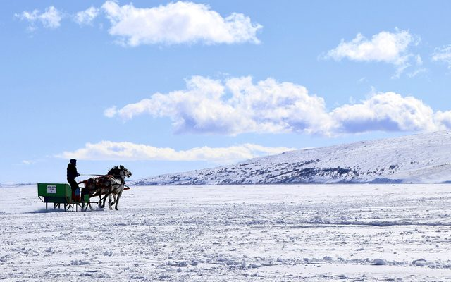
चिल्दिर झीलअर्दाहान · झीलओदेमिश संग्रहालयइज़मिर · संग्रहालय ओकुज़िनी गुफाअंताल्या · पुरातात्विक स्थल
ओकुज़िनी गुफाअंताल्या · पुरातात्विक स्थल ओकुज़लुमेर्सिन · पुरातात्विक स्थल
ओकुज़लुमेर्सिन · पुरातात्विक स्थल ओज़कोनाक भूमिगत नगरनेवशेहिर · भूमिगत नगर
ओज़कोनाक भूमिगत नगरनेवशेहिर · भूमिगत नगर उर्गुप संग्रहालयनेवशेहिर · संग्रहालय
उर्गुप संग्रहालयनेवशेहिर · संग्रहालय तीन कुम्बेतएर्ज़ुरुम · धार्मिक इमारत
तीन कुम्बेतएर्ज़ुरुम · धार्मिक इमारत ऊचायाकली विलामेर्सिन · पुरातात्विक स्थलइदिरोसअंताल्या · पुरातात्विक स्थल
ऊचायाकली विलामेर्सिन · पुरातात्विक स्थलइदिरोसअंताल्या · पुरातात्विक स्थल इल्हान कोमान मूर्तिकला एवं चित्रकला संग्रहालयएदिर्ने · संग्रहालय
इल्हान कोमान मूर्तिकला एवं चित्रकला संग्रहालयएदिर्ने · संग्रहालय इल्तेर उज़ेल चिकित्सा और दंत चिकित्सा संग्रहालयअदाना · संग्रहालय
इल्तेर उज़ेल चिकित्सा और दंत चिकित्सा संग्रहालयअदाना · संग्रहालय इमराहोर इल्यास बे मस्जिद (स्टूडियोस मठ)इस्तांबुल · धार्मिक इमारतइनोनु युद्ध मुख्यालय संग्रहालयएस्कीशेहिर · संग्रहालय
इमराहोर इल्यास बे मस्जिद (स्टूडियोस मठ)इस्तांबुल · धार्मिक इमारतइनोनु युद्ध मुख्यालय संग्रहालयएस्कीशेहिर · संग्रहालय इसहाक़ पाशा महलआग्री · क़िला और ऐतिहासिक इमारत
इसहाक़ पाशा महलआग्री · क़िला और ऐतिहासिक इमारत इस्केले आइकन संग्रहालयइस्केले (त्रिकोमो) · संग्रहालयइस्केंदरुन नौसेना संग्रहालयहताय · संग्रहालय
इस्केले आइकन संग्रहालयइस्केले (त्रिकोमो) · संग्रहालयइस्केंदरुन नौसेना संग्रहालयहताय · संग्रहालय इस्लाम में विज्ञान और प्रौद्योगिकी इतिहास संग्रहालयइस्तांबुल · संग्रहालय
इस्लाम में विज्ञान और प्रौद्योगिकी इतिहास संग्रहालयइस्तांबुल · संग्रहालय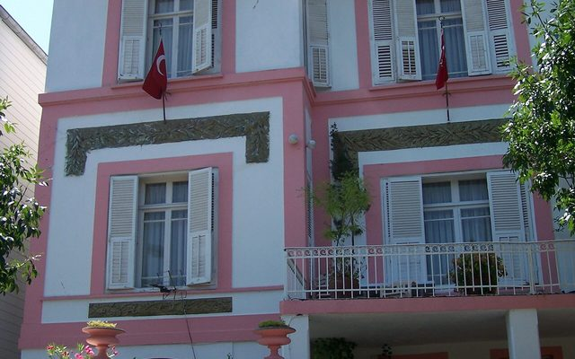
इस्मत इनोनु गृह संग्रहालयइस्तांबुल · संग्रहालय इस्तांबुल पुरातत्व संग्रहालयइस्तांबुल · संग्रहालय
इस्तांबुल पुरातत्व संग्रहालयइस्तांबुल · संग्रहालय इस्तांबुल नौसेना संग्रहालयइस्तांबुल · संग्रहालय
इस्तांबुल नौसेना संग्रहालयइस्तांबुल · संग्रहालय इस्तांबुल गलाता बुर्जइस्तांबुल · क़िला और ऐतिहासिक इमारत
इस्तांबुल गलाता बुर्जइस्तांबुल · क़िला और ऐतिहासिक इमारत इस्तांबुल विमानन संग्रहालयइस्तांबुल · संग्रहालयइस्तांबुल हवाई अड्डा संग्रहालयइस्तांबुल · संग्रहालय
इस्तांबुल विमानन संग्रहालयइस्तांबुल · संग्रहालयइस्तांबुल हवाई अड्डा संग्रहालयइस्तांबुल · संग्रहालय इस्तांबुल मॉडर्नइस्तांबुल · संग्रहालय
इस्तांबुल मॉडर्नइस्तांबुल · संग्रहालय इस्तांबुल खिलौना संग्रहालयइस्तांबुल · संग्रहालय
इस्तांबुल खिलौना संग्रहालयइस्तांबुल · संग्रहालय इज़मिर पुरातत्व संग्रहालयइज़मिर · संग्रहालय
इज़मिर पुरातत्व संग्रहालयइज़मिर · संग्रहालय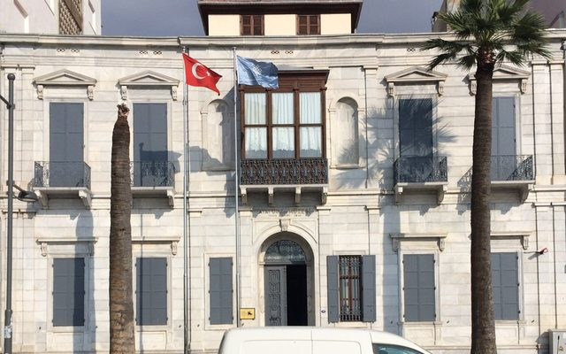
इज़मिर अतातुर्क संग्रहालयइज़मिर · संग्रहालय इज़मिर संस्कृति और कला कारख़ानाइज़मिर · संग्रहालय
इज़मिर संस्कृति और कला कारख़ानाइज़मिर · संग्रहालय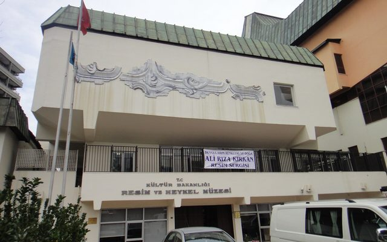
इज़मिर चित्रकला और मूर्तिकला संग्रहालयइज़मिर · संग्रहालय इज़मित भूकंप स्मृति और जागरूकता संग्रहालयकोजाएली · संग्रहालय
इज़मित भूकंप स्मृति और जागरूकता संग्रहालयकोजाएली · संग्रहालय इज़निक संग्रहालयबुर्सा · संग्रहालय
इज़निक संग्रहालयबुर्सा · संग्रहालय इज़्ज़त कोयुनओग्लु नगर संग्रहालयकोन्या · संग्रहालय
इज़्ज़त कोयुनओग्लु नगर संग्रहालयकोन्या · संग्रहालय शानलीउर्फ़ा पुरातत्व संग्रहालयशानलीउर्फ़ा · संग्रहालय
शानलीउर्फ़ा पुरातत्व संग्रहालयशानलीउर्फ़ा · संग्रहालय शानलीउर्फ़ा किलाशानलीउर्फ़ा · क़िला और ऐतिहासिक इमारत
शानलीउर्फ़ा किलाशानलीउर्फ़ा · क़िला और ऐतिहासिक इमारत शापिनुवाचोरुम · पुरातात्विक स्थल
शापिनुवाचोरुम · पुरातात्विक स्थल शार (कप्पादोकिया का कोमाना)अदाना · पुरातात्विक स्थल
शार (कप्पादोकिया का कोमाना)अदाना · पुरातात्विक स्थल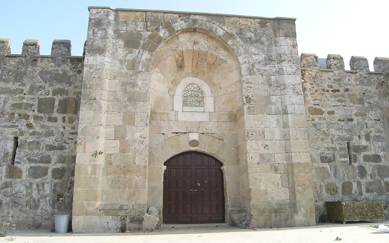
शरापसा हानअंताल्या · क़िला और ऐतिहासिक इमारत शेबिनकाराहिसार अतातुर्क गृह संग्रहालयगिरेसुन · संग्रहालय
शेबिनकाराहिसार अतातुर्क गृह संग्रहालयगिरेसुन · संग्रहालय शहज़ादे मस्जिदइस्तांबुल · धार्मिक इमारत
शहज़ादे मस्जिदइस्तांबुल · धार्मिक इमारत शेरेफ़िये (थियोडोसियस) हौज़इस्तांबुल · क़िला और ऐतिहासिक इमारत
शेरेफ़िये (थियोडोसियस) हौज़इस्तांबुल · क़िला और ऐतिहासिक इमारत शिरिंजे गाँवइज़मिर · क़िला और ऐतिहासिक इमारतशुऐब नगरशानलीउर्फ़ा · पुरातात्विक स्थल
शिरिंजे गाँवइज़मिर · क़िला और ऐतिहासिक इमारतशुऐब नगरशानलीउर्फ़ा · पुरातात्विक स्थल